2025-12-8
Boxin Wang∗, Chankyu Lee*, Nayeon Lee*, Sheng-Chieh Lin*, Wenliang Dai*, Yang Chen*, Yangyi Chen*, Zhuolin Yang*, Zihan Liu*, Mohammad Shoeybi, Bryan Catanzaro, Wei Ping*†
使用强化学习（RL）构建通用推理模型，需要应对显著的跨领域异质性，包括推理时响应长度和验证延迟的大幅变化。这种变化使 RL 基础设施更加复杂，减慢训练，并给训练课程（例如响应长度扩展）和超参数选择带来困难。在这项工作中，我们提出级联式分领域强化学习（级联 RL），以开发 Nemotron-Cascade；它能够同时采用指令模式和深度思考模式运行，并且相对于仅支持思考模式的对应模型没有任何性能差距。不同于混合来自不同领域的异质提示的常规方法，级联 RL 组织顺序执行的分领域 RL，降低工程复杂性，并在广泛的基准上取得最先进的性能。值得注意的是，用于对齐的 RLHF 在作为预先步骤时，会提升模型的推理能力，其作用远远超出单纯的偏好优化；后续分领域 RLVR 阶段很少降低在较早领域中取得的基准性能，甚至可能使其提高（示意图见图 1）。我们的 14B 模型在 RL 之后，在 LiveCodeBench v5/v6/Pro 上超越其 SFT 教师 DeepSeek-R1-0528，并在 2025 年国际信息学奥林匹克竞赛（IOI）中达到银牌水平。我们透明地分享训练和数据配方。
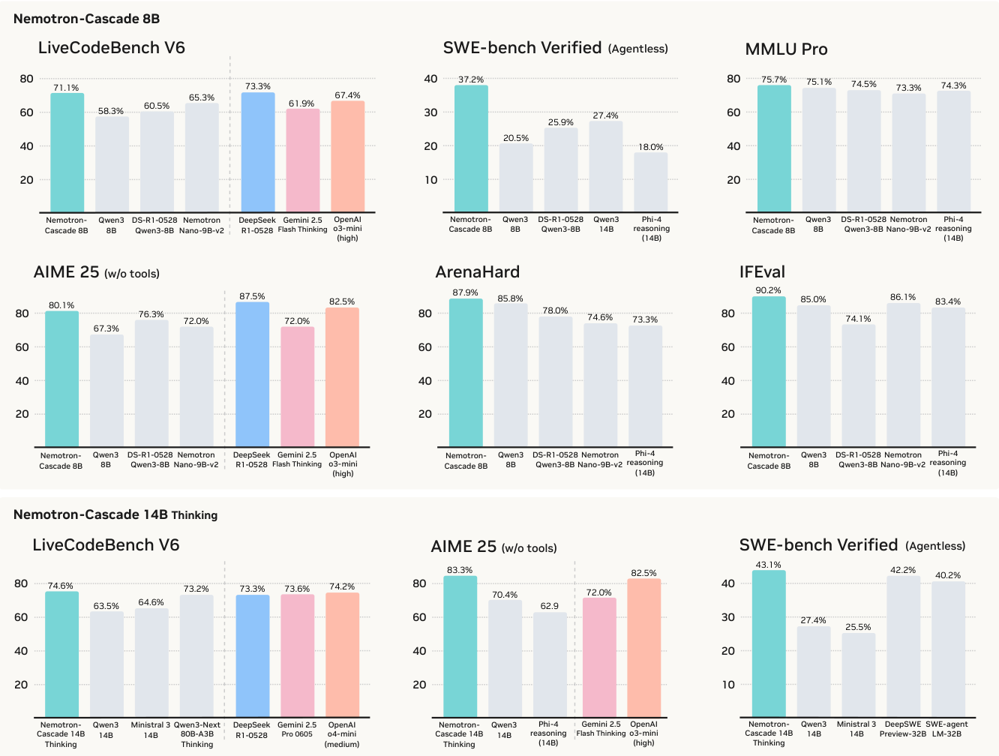
∗ 技术贡献相同，作者姓名按名字的字母顺序排列。
† 领导本项工作。通信作者：wping@nvidia.com。
© 2026 NVIDIA。保留所有权利。
arXiv:2512.13607v2 [cs.CL]，2026 年 3 月 27 日。
1 引言 4
2 主要结果 6
3 SFT 7
3.1 训练框架 8
3.1.1 多阶段 SFT 8
3.1.2 聊天模板 8
3.2 SFT 数据整理 9
3.2.1 通用领域数据 9
3.2.2 数学推理数据 10
3.2.3 代码推理数据 10
3.2.4 科学推理数据 10
3.2.5 工具调用数据 11
3.3 软件工程任务 11
3.3.1 Agentless 框架 11
3.3.2 数据整理 12
3.4 SFT 后的结果 13
4 级联 RL 13
4.1 训练框架 13
4.1.1 为什么面向 LLM 的 级联 RL 能抵抗灾难性遗忘 13
4.1.2 RL 训练配置 14
4.2 奖励建模 15
4.2.1 数据整理 15
4.2.2 训练配方 15
4.3 RLHF 17
4.3.1 数据整理 17
4.3.2 训练配方 17
4.3.3 RLHF 后的结果 18
4.4 指令遵循强化学习（IF-RL） 18
4.4.1 数据整理 18
4.4.2 训练配方 19
4.4.3 IF-RL 后的结果 20
4.5 数学 RL 20
4.5.1 数据整理 20
4.5.2 训练配方 21
4.5.3 数学 RL 后的结果 23
4.6 代码 RL 23
4.6.1 数据整理 23
4.6.2 训练配方 24
4.6.3 代码 RL 后的结果 25
4.7 SWE RL 25
4.7.1 数据整理 26
4.7.2 训练配方 26
4.7.3 SWE RL 后的结果 27
5 深入分析竞争性编程 28
5.1 实践中的 test-time scaling：IOI 2025 28
5.2 训练温度在代码 RL 中的作用 30
5.3 级联 RL 如何改进代码推理 31
6 深入分析 RLHF 31
6.1 统一模型的 RLHF 训练策略 32
6.2 RM 规模对 RLHF 性能的影响 32
6.3 稳定 RLHF 训练的技巧 33
7 深入分析 SWE 34
7.1 用于代码定位的生成–检索方法 34
7.2 用于 SWE RL 的无需执行的 RM 35
7.3 改进长上下文分析 36
7.4 test-time scaling 与补丁验证 36
8 相关工作 37
8.1 面向 LLM 的强化学习 38
8.2 SFT 与蒸馏 38
8.3 统一推理模型 39
A 致谢 39
B 基准与评估设置 39
C 提示模板 41
C.1 为 RM 数据生成不受偏好的响应 41
C.2 SWE 任务的提示与模板 42
C.3 IOI 2025 test-time scaling 的提示模板 45
D 训练超参数 46
D.1 多阶段 SFT 46
D.2 RLHF 46
D.3 IF-RL 47
D.4 数学 RL 47
D.5 代码 RL 47
D.6 SWE RL 49
E ELO 评级分析 49
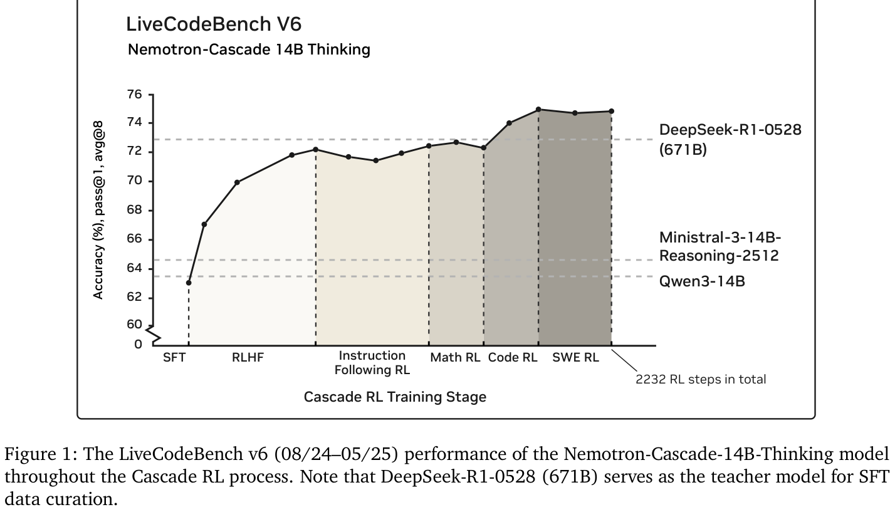
强化学习（RL）通过大幅改进基于人类反馈的对齐（RLHF）（Ouyang et al., 2022），以及利用可验证奖励（RLVR）增强推理性能（Guo et al., 2025），成为开发具有先进推理能力的通用 LLM 的基石。然而，用 RL 训练通用推理模型，在响应长度和奖励信号计算两方面都涉及不同领域之间显著的异质性。例如，数学推理任务采用快速的基于符号规则的验证，代码生成和软件补丁采用缓慢的基于执行的验证，而对齐和创意写作则计算基于 RM 的分数。这种领域特有的异质性使 RL 基础设施更加复杂，减慢训练，并增加训练课程（例如最大响应长度扩展）和超参数选择的难度。
在我们此前的研究（Chen et al., 2025）中，我们提出以级联方式在数学和代码领域进行 RL：先仅使用数学提示训练，再仅使用代码提示训练。这种级联范式带来多项优势：a）基于规则的数学验证能够快速执行，比代码验证快几个数量级，使模型能够立即更新，无须等待代码提示所需的更长验证周期；b）数学 RL 同时提升数学基准和令人意外的代码基准的性能；c）随后的代码 RL 显著增强代码基准性能，同时不降低数学结果。在本工作中，我们将级联跨领域 RL 范式扩展到广泛得多的领域，以构建通用推理模型。
自 OpenAI o1（OpenAI, 2024）推出以来，LLM 社区发布的模型通常分成两类：思考模型，在给出答案前生成显著更多的推理 token（例如 DeepSeek-R1（Guo et al., 2025）、OpenAI o3 和 o4-mini（OpenAI, 2025）、Kimi-K2-Thinking（Kimi-Team, 2025））；以及指令模型或非思考模型，即时生成答案（例如 DeepSeek-V3（Liu et al., 2024）、GPT-4.5（OpenAI, 2025）、Kimi-K2-Instruct（Kimi-Team et al., 2025））。与此同时，理想的情况是构建一个统一推理模型，它能够同时采用非思考与思考模式运行，将所有能力整合在单个模型中。这将 i）大幅简化模型发布与生产流程，
（接下一页）
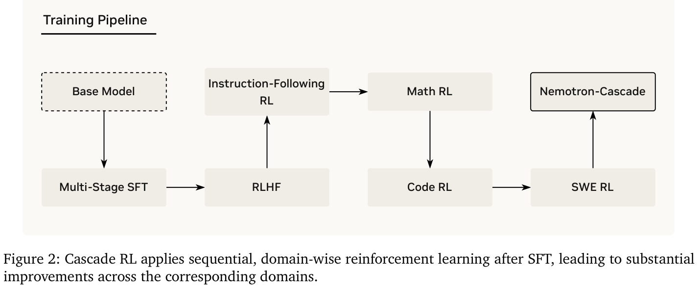
（续上一页）
以及 ii）更加贴近人工通用智能的最终目标。因此，人们投入了大量努力来开发单个统一模型（DeepSeek-AI, 2025; OpenAI, 2025; Yang et al., 2025）。
在努力“顺畅地整合所有能力”的过程中，人们已经认识到一些技术挑战（例如 Altman, 2025），其中包括统一模型在思考模式下运行时，相对于专用思考模型出现推理基准性能下降。例如，尽管 Qwen3 系列（Yang et al., 2025）最初作为一组统一推理模型发布，后来却重新采用独立的思考和指令变体，专用思考模型（Qwen-Team, 2025）的性能显著超过处于思考模式的统一模型。GPT-5 的发布探索了在两个专门模型之间进行路由，将标准指令模型与专用思考模型结合使用。然而，最终目标仍然是将两者整合进单个模型（OpenAI, 2025）。统一模型 DeepSeek-V3.1（DeepSeek-AI, 2025）在推理基准上的思考模式性能，与较早的专用推理模型 DeepSeek-R1-0528 相当。然而，除 DeepSeek-V3.1 和 DeepSeek-R1-0528 基于不同基础模型且很可能采用不同数据混合进行训练之外，技术细节尚未披露。
在本工作中，我们专注于开发开放的后训练配方，以预训练的 Qwen3-8B-Base 和 Qwen3-14B-Base（Yang et al., 2025）为起点，支持透明比较并促进社区知识共享。具体而言，我们扩展级联强化学习（级联 RL）框架来开发 Nemotron-Cascade 模型，在多个领域取得新的最先进结果。训练流程概览如图 2 所示。级联 RL 按领域顺序训练模型，与 DeepSeek-R1（Guo et al., 2025）和 Qwen3（Yang et al., 2025）等方法形成对比，后者混合所有（推理）领域的多种提示分布，联合进行 RL 训练。此外，我们展示了统一推理模型能够在思考和非思考模式下有效运行，消除与专用思考模型之间的推理差距，同时通过开放数据与训练配方确保透明性。
具体而言，我们工作的贡献包括：
■ 我们将级联强化学习（级联 RL）扩展到广泛的领域，包括人类反馈对齐、严格指令遵循、数学推理、竞争性编程与软件工程。所提出的 级联 RL 框架具有显著优势：i）RLHF 显著提高整体响应质量（例如减少冗长），从而提升推理性能；ii）后续特定领域的 RL 阶段很少降低基准
（接下一页）
（续上一页）
在较早领域中取得的性能，甚至可能提高它，因为 RL 能抵抗灾难性遗忘（示例见图 1，深入讨论见 §4.1.1）；以及 iii）可以针对每个特定领域定制 RL 超参数与训练课程，以取得最优性能。
■ 我们开发了 Nemotron-Cascade-8B 统一推理模型，使用户能够在每个对话轮次控制思考模式与非思考／指令模式。我们挑战了以下假设：LLM，尤其是较小的模型，没有足够能力同时从非思考和思考数据中有效学习。我们展示，即使两个模型使用相同的思考／推理数据训练，而统一模型额外使用非思考数据训练，处于思考模式的 8B 统一模型与专用 8B-Thinking 模型之间的推理性能差距也能够消除。实现这一结果的关键技术是：（1）整理 SFT 数据，为相同提示提供思考和指令模式的并行响应；（2）通过 RLHF 训练融合这两种模式，在每个 batch 中将采样提示平均分配到各模式。
■ 我们用 级联 RL 方法训练的 8B/14B 模型，在覆盖所有这些领域的广泛基准上取得最先进、同类最佳的性能。例如，在 64K token 的推理预算下，我们的 14B 专用 Thinking 模型在 LiveCodeBench v5/v6（Jain et al., 2024）上超越 Gemini-2.5-Pro-06-05、o4-mini（medium）、Qwen3-235B-A22B（思考模式）与 DeepSeek-R1-0528（其 SFT 教师）（见图 1）。它还在 2025 年国际信息学奥林匹克竞赛（IOI）上达到银牌水平。
■ 我们透明地分享训练和数据整理配方，并在以下地址发布完整模型与训练数据集合：https://huggingface.co/collections/nvidia/nemotron-cascade。
本报告余下内容安排如下。我们首先在 §2 展示主要结果，并在后续章节给出技术细节。§3 描述后训练配方中的 SFT 阶段。在 §4，我们介绍所提出的 级联 RL 框架。我们在 §5 重点介绍竞争性编程结果（包括 IOI 2025）。我们在 §6 深入分析 RLHF，并在 §7 进一步探索软件工程（SWE）任务。§8 讨论相关工作。
我们在一套全面的基准上评估模型和基线，包括 MMLU（Hendrycks et al., 2020）、MMLU-Pro（Wang et al., 2024）、GPQA-Diamond（Rein et al., 2024）、IFEval（Zhou et al., 2023）、IFBench（Pyatkin et al., 2025）、ArenaHard（Li et al., 2024）、LiveCodeBench v5 和 v6（Jain et al., 2024）、LiveCodeBench Pro（Zheng et al., 2025）、SWE-bench Verified（Jimenez et al., 2023; OpenAI, 2024）与 BFCL-V3（Patil et al., 2025）。这些基准共同覆盖通用知识推理、对齐与指令遵循、数学推理、竞争性编程、软件工程和工具使用能力。对于基线模型，我们在存在官方报告结果时采用它们。对于 Nemotron-Cascade 模型，我们使用最大生成长度 64K token，并对推理任务将 temperature 设置为 0.6、top-p 设置为 0.95。附录 B 详细介绍基准和具体评估设置。
主要结果见表 1。所有分数均以 pass@1 报告，对每个提示的 \(k\) 次生成取平均（avg@k）；\(k\) 选择适当的值（通常介于 4 到 64 之间，取决于测试集大小）。我们的统一推理模型 Nemotron-Cascade-8B 和专用思考模型 Nemotron-Cascade-14B-Thinking 在几乎所有基准上取得同类最佳性能。相对于表 2 的结果，我们用 ↑ 标出将完整 级联 RL 流程应用于 SFT 模型所取得的显著提升。
在本工作中，我们还通过评估图 2 所示 级联 RL 流程每个阶段之后的模型，进行全面消融。流程各阶段之后的结果汇总如下：表 2 对应 SFT，表 4 对应 RLHF，表 5 对应指令遵循 RL，表 6 对应数学 RL，表 7 对应代码
（接下一页）
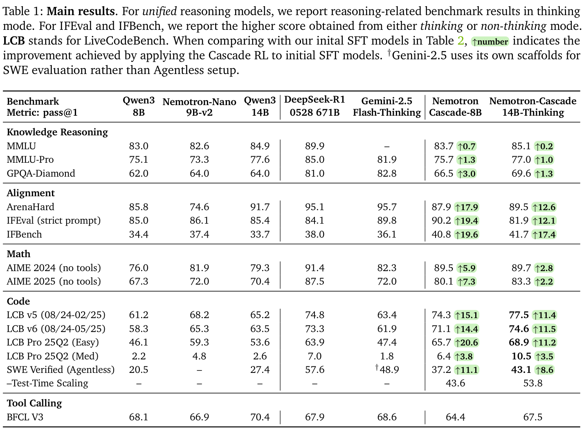
（续第 6 页）
RL，表 8 对应 SWE RL。
值得注意的是，我们观察到 LiveCodeBench（LCB）和 LCB Pro 上的显著提升：Nemotron-Cascade-8B 在 LCB v5 上达到 74.3，在 LCB v6 上达到 71.1。尽管仅为 8B 模型，其性能与 DeepSeek-R1-0528（671B）高度接近，后者报告的 LCB v5 和 LCB v6 分数分别为 74.8 和 73.3。请注意，DeepSeek-R1-0528（671B）在 SFT 中充当教师模型，为 SFT 数据整理中使用的代码提示生成所有响应（见 §3.2.3）。令人瞩目的是，我们的 Nemotron-Cascade-14B-Thinking 模型在 LCB 和 LCB Pro 基准的所有划分上，均以明显优势超越 DeepSeek-R1-0528。这些结果突出表明，所提出的 级联 RL 框架在增强推理能力方面极其有效。包括 IOI 2025 在内的更多结果见第 5 节。
在 SWE-bench Verified 上，最好的通用开放 8B 与 14B LLM 在这一具有挑战性的基准上表现不佳。基于 Qwen3-32B、专门面向 SWE 任务的专用模型 DeepSWE-32B（Luo et al., 2025），取得 42.2% 的 pass@1 准确率。相比之下，我们的通用 8B 和 14B 模型分别达到 37.2% 和 43.1%。更多细节和 test-time scaling 结果见 §7。
本节介绍 SFT 的训练框架和数据整理；这是我们后训练流程的第一阶段。这一阶段为模型赋予基础技能与能力，后续阶段通过级联强化学习（级联 RL）显著增强这些能力。
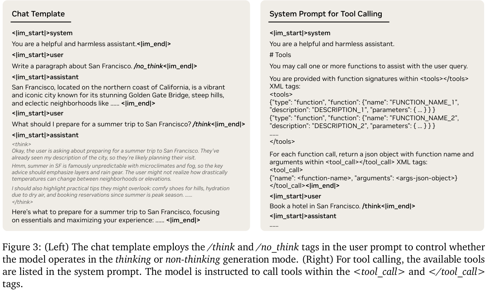
我们的 SFT 课程包含两个阶段，覆盖广泛领域，包括数学、编程、科学、工具使用与软件工程，以及多轮对话、知识密集型问答、创意写作、角色扮演、安全和指令遵循等通用领域。这些领域的数据整理细节见 §3.2。SFT 课程概述如下：
SFT 训练超参数见附录 D。
我们定义模型的交互模式，这对于支持思考和非思考生成模式的统一推理模型尤为重要。我们采用标准 ChatML 模板（OpenAI），并在用户提示中引入两个控制标记 /think 和 /no_think，明确指示模型以对应模式生成响应。
尽管此前的工作（Bakouch et al., 2025; Yang et al., 2025）采用类似的控制标记机制，我们引入了一些简化和增强，以更精确、更灵活地控制模型的生成行为。与将 /think 和 /no_think 标记置于
（接下一页）
（续上一页）
系统提示中、因而全局控制整个对话的 Bakouch et al.（2025）不同，我们将标记追加到每个独立的用户提示。这种设计同时支持全局和局部控制：在每个用户轮次追加相同标记，会强制一致的全局行为；而在多个轮次间改变标记，则能够在单次对话中动态切换。
与 Qwen3 推理模型（Yang et al., 2025）相比，我们的方法进一步简化了模式控制。Qwen3 采用冗余机制，能够通过两种方式切换模式：显式标记，或者通过 enable_thinking 参数修改模板，由后者隐式决定模式（默认为思考模式，而前置空的 <think></think> 块会激活非思考模式）。我们的早期实验表明，显式标记比基于模板的提示能够实现更可靠的模式切换。此外，仅使用标记的设计能够覆盖全部使用情况，且没有任何性能下降。因此，我们仅采用基于标记的方法。这一简化使得非思考模式中省略空的 <think></think> 块，因为它不再需要。
对于工具调用任务，我们在系统提示的 <tools> 和 </tools> 标签内指定所有可用工具，如图 3 右侧所示。我们还指示模型将工具调用包围在
我们从多种通用领域数据集中整理出一个全面语料库，包含 2.8M 样本、3.2B token，为模型赋予基础技能和稳健的对话能力。这一语料库涵盖广泛任务，包括日常对话、问答（Lian et al., 2023; Yuan et al., 2024）、创意写作（Allal et al., 2025; Xu et al., 2024）、安全（Bercovich et al., 2025）、指令遵循（Lambert et al., 2024）、角色扮演（Lambert et al., 2024）等。此外，对于跨通用领域的知识密集型任务（Gema et al., 2024; Hendrycks et al., 2021; Wang et al., 2024），我们从公开数据集（例如 Khot et al., 2020; Longpre et al., 2023）收集问题，并用来自专业法律和伦理等挑战性领域的特定领域问题进一步扩充，得到包含 1.5B token 的 1.2M 样本。
然而，直接组合这些语料库带来三个显著挑战。首先，许多响应过于简短（例如单词或极少句子的输出），因此缺乏足够细节和阐述。其次，响应质量差异很大，一些数据集包含不准确或次优答案。第三，由于这些数据集的来源和标注惯例各不相同，直接在其上训练会使模型生成出现风格不一致。为解决这些问题，我们对每个提示分别用 DeepSeek-R1-0528（DeepSeek-AI, 2025）和 DeepSeek-V3-0324（DeepSeek-AI, 2025）生成并行响应，获取思考和非思考格式的数据，最大序列长度为 16K，从而确保风格与质量一致。
为进一步提高训练数据质量，我们采用多个后处理步骤。对于具有高质量标注的样本，我们保留原始响应，以保持多样性。此外，对于具有可验证真实答案的提示（例如多项选择题），我们通过丢弃偏离真实答案的响应，提高生成准确性。对于没有真实答案的样本，我们用辅助模型（Qwen2.5-32B-Instruct（Yang et al., 2024））交叉验证生成响应，过滤潜在低质量生成。
为解决指令遵循与创意写作等领域的数据稀缺，我们用不同随机种子为每个提示生成多个响应，从而丰富多样性并提高生成质量。为进一步增强多轮对话能力，我们通过两种方式人工扩充多轮样本。首先，对于创意写作领域的单轮样本，我们添加第二轮，指示模型按具体要求重写或编辑先前响应。其次，我们随机拼接
（接下一页）
（续上一页）
单轮样本来构建多轮对话，模拟现实世界聊天机器人交互。
我们使用 AceReason-Nemotron-1.1（Liu et al., 2025）的数学推理 SFT 提示进行阶段 1 SFT 训练。这些提示涵盖不同数据来源，包括 AceMath（Liu et al., 2024）、NuminaMath（Li et al., 2024）和 OpenMathReasoning（Moshkov et al., 2025）。对应响应由 DeepSeek-R1（Guo et al., 2025）生成。我们遵循 AceReason-Nemotron-1.1 的 SFT 配置，将最大上下文长度设为 16,384 token（16K），并过滤超过此限制的样本，防止响应截断。我们总共收集 353K 个独特提示，并为每个提示生成多个响应，得到 2.77M 样本，平均每个提示 7.8 个响应。我们删除与标准数学基准测试样本存在 9-gram 重叠的所有样本，进行数据去污染。
为进一步增强模型推理能力，我们用 DeepSeek-R1-0528（DeepSeek-AI, 2025）生成响应，构建阶段 2 数学 SFT 数据集。与原始 DeepSeek-R1 相比，更新的 DeepSeek-R1-0528 产生更长、更详细的推理轨迹，从而改善挑战性问题的表现。我们将最大上下文长度设为 32,768 token（32K），为模型提供更大的推理 token 预算。阶段 2 提示集通过从阶段 1 中过滤相对简单的问题得到，具体而言，是那些 DeepSeek-R1 响应少于 2K token 的问题。我们总共获得 163K 个提示，生成 1.88M 样本，平均每个提示 11.5 个响应。阶段 1 和阶段 2 SFT 中的全部数学推理数据均采用思考模式格式。
按照与数学推理数据构建相似的流程，我们采用 AceReason-Nemotron-1.1（Liu et al., 2025）的代码推理 SFT 提示，其中包含来自 TACO（Li et al., 2023）、APPs（Hendrycks et al., 2021）、OpenCoder-Stage-2（Huang et al., 2024）和 OpenCodeReasoning（Ahmad et al., 2025）的数据。我们对数据集去重，确保所有提示唯一，得到 172K 个不同提示。我们用 DeepSeek-R1（Guo et al., 2025）为阶段 1 SFT 生成 1.42M 样本，平均每个提示 8.3 个响应，最大上下文长度为 16,384 token（16K）。为了数据去污染，我们过滤与代码基准任意测试样本存在 9-gram 重叠的所有样本。
为构建阶段 2 代码 SFT 数据集，我们使用来自 OpenCodeReasoning（Ahmad et al., 2025）和 OpenCoder-Stage2（Huang et al., 2024）的提示。OpenCodeReasoning 提供多样的挑战性代码提示，而 OpenCoder-Stage2 覆盖带有初始代码入口点的编程任务。与阶段 2 数学 SFT 数据集相同，我们将最大上下文长度设为 32,768 token（32K）。总共构建 79K 个独特提示，使用 DeepSeek-R1-0528 生成 1.39M 样本，平均每个提示 17.6 个响应。阶段 1 和阶段 2 SFT 中的全部代码推理数据均采用思考模式格式。
我们从 S1K（Muennighoff et al., 2025）和 Llama-Nemotron 使用的后训练数据集（Bercovich et al., 2025; Nathawani et al., 2025）整理科学相关提示。鉴于这些来源的许多提示是多项选择题，我们排除模型专注于分析各选项、而非直接解决问题并确定正确答案的样本。由此，我们保留需要较强科学知识、涉及大量推理或复杂计算的问题。
为通过较少见、更加多样的问题类型丰富数据集，我们利用 DeepSeek-R1-0528（DeepSeek-AI, 2025）从每个给定提示生成较罕见的问题，遵循 Liu et al.（2024）采用的合成问题生成策略。最后，我们进行数据去污染，删除与科学基准任意测试样本存在 9-gram 重叠的所有样本。我们总共收集 226K 个科学提示，用 DeepSeek-R1 为阶段 1 SFT 生成 289K 样本（最长 16K token），并用 DeepSeek-R1-0528 为阶段 2 SFT 生成 345K 样本（最长 32K token）。全部科学推理数据均采用
（接下一页）
（续上一页）
思考模式格式，并为选出的高质量提示生成多个响应。阶段 2 科学推理数据在混入阶段 2 SFT 数据集前，进行 \(2\times\) 上采样。
我们使用 Llama-Nemotron（Nathawani et al., 2025）的工具调用数据集，它专门用于训练模型处理涉及外部工具使用（如函数调用）的场景。这一数据集十分全面，涵盖单轮、多轮与多步骤交互。例如，某些提示要求模型提出澄清问题，以收集工具调用所需的足够信息，而其他提示可能需要使用多个工具，甚至在得出最终答案前执行多轮工具调用。它还包括模型无法在提供的工具列表中找到合适工具的情况。对每段对话，我们遵循 Qwen3（Yang et al., 2025）采用的设置，将全部可用工具包含在系统提示中。平均而言，每段对话包含 4.4 个可用工具。该工具调用 SFT 数据集用于阶段 2 SFT 训练，响应由 Qwen3-235B-A22B（Yang et al., 2025）生成。请注意，全部工具调用数据均采用思考模式格式。总体而言，我们收集了 310K 段对话，包含 1.41M 个用户–助手轮次。
软件工程已经成为 LLM 最重要的应用之一（例如 Anthropic, 2025）。例如，SWE-bench Verified（Jimenez et al., 2023）已成为广泛使用的软件工程基准，包含现实世界 GitHub 问题及其对应代码库和描述；目标是生成能够成功解决所提出问题的修复补丁。
为评估自动化软件工程能力，我们采用 Agentless（Xia et al., 2024），它将整体任务分解为三个阶段（即定位、修复和补丁验证），无须 LLM 自行规划动作序列或操作外部工具。
在本工作中，我们使用类似 Agentless Mini（Wei et al., 2025）的简化 Agentless 框架，将定位过程简化为仅识别相关问题文件。这一方法不同于原始 Agentless 流程：后者采用三阶段分层定位策略，从文件级推进到类／函数级，最后到行级识别，然后才进入修复与补丁验证阶段。通过简化定位过程，LLM 可以将更多推理能力用于修复任务本身，同时强化学习被整合为一个集中目标，直接优化修复补丁生成。
对于代码修复阶段，主要目标是生成有效候选补丁，解决已识别的代码库级问题。在较早阶段定位相关文件后，提示 LLM 生成修复编辑，仅修改代码库必要部分。为最大化上下文理解，我们将多个已定位文件及其周围代码片段（例如导入、类定义和依赖函数）拼接成统一提示，使模型能够对更广泛的代码库级依赖关系进行推理。我们指导模型生成有针对性的 diff 风格补丁，保留无关代码结构，减少幻觉与语法错误，而不是重写整个修复文件。
对于补丁验证阶段，我们的框架通过回归、复现和多数投票三个步骤运行。在回归阶段，首先通过代码库已有回归测试评估每个候选补丁，以确保兼容性。这一步过滤引入故障或破坏原先正确功能的补丁，确保后续评估仅关注稳定且语法有效的候选补丁。在复现阶段，框架为每个问题实例生成 10 个复现测试，在未修改的代码库上复现原始 bug 行为，并在应用补丁后验证功能正确性。无法触发原始 bug 的复现测试会被丢弃，以保持较高诊断精度，然后在每个候选补丁上执行保留的测试，使系统能够识别哪些补丁成功消除报告的问题。最后，在多数投票
（接下一页）
（续上一页）
阶段，我们汇总多个采样生成的结果，选择最可靠的补丁。在分数最高的候选补丁中，我们首先优先选择测试时样本中生成频率最高的补丁，反映模型修复推理能力的共识。如果出现平局，我们倾向于生成序列更短或编辑距离最小的补丁，促进简洁性与可解释性。这一多阶段验证框架确保最终选择的补丁在功能上正确，并且能够稳健应对代码库级依赖关系，在精度与效率之间取得平衡。
各阶段使用的提示见附录 C.2。我们在 §7 详细介绍本工作相对于以往研究采用的改进技术，包括增强的代码文件定位与补丁验证。
我们的软件工程任务训练数据由以下开源数据集构成：
为防止评估数据污染，我们针对 SWE-bench Verified（Jimenez et al., 2023）实施全面去重流程。具体而言，我们排除所有来自评估数据集中出现的代码库的实例。此外，我们在不同来源的训练数据之间去重，消除重复实例。该去重流程同时匹配代码库名称和基础提交标识符，以确保移除相同实例。
我们为 Agentless 框架中的三个子任务构建 SFT 数据集：
为构建 SFT 数据集，我们用 DeepSeek-R1-0528（DeepSeek-AI, 2025）在数据来源中列出的四个数据集上生成多个响应。对于 SWE-Bench-Train、SWE-reBench 和 SWE-Smith，我们为每个提示生成 8 个响应；对于规模更大的 SWE-Fixer-Train 数据集，则为每个提示生成 4 个响应。输入提示的结构包括任务要求、问题陈述、修复任务的代码文件内容以及期望输出格式。模板细节见附录 C.2。模型被指示输出完整推理链与解决方案。对于代码定位，解决方案包含可能存在 bug 的代码文件名称的优先列表，按包含 bug 的可能性从高到低排序。对于代码修复，解决方案包含要替换的代码块及用于替换的代码补丁。对于测试代码生成，解决方案包含一组单元测试和复现测试，用于同时验证 bug 复现与补丁正确性。
为确保高质量训练数据，我们针对真实标注验证所有生成响应。我们的过滤策略在三个任务之间有所不同。对于定位任务，我们仅保留包含解决问题所需全部有 bug 的代码文件的样本（即召回率等于 1.0）。对于修复任务，我们遵循 Wei et al.（2025）的方法，使用用于解析和操作 unified diff 数据的轻量 Python 库 Unidiff，衡量生成补丁与真实补丁的相似性。我们采用分层方法：体现稳定解决质量的实例——对于 SWE-Bench-Train、SWE-reBench 和 SWE-Smith，定义为 8 个采样响应中至少 4 个超过 0.5 相似度阈值——纳入 SFT 数据集。更具挑战性的实例——定义为排除 SFT 样本后，8 个采样响应中至少 1 个达到非零相似度的实例——保留用于 §4.7 描述的 SWE RL 训练。考虑到 SWE-Fixer-Train 数据集的规模与多样性，我们纳入所有超过 0.5 相似度阈值的提示–响应对。对于测试代码生成，我们仅保留能够成功解析并作为复现测试执行、且没有任何语法错误的轨迹。
所得代码修复数据集包含 127K 个实例，分布如下：SWE-Bench-Train 17K、SWE-reBench 17K、SWE-Smith 18K、SWE-Fixer-Train 77K。这种组成在保持高数据质量标准的同时，确保全面覆盖多样的编程场景。所得定位与测试用例生成数据集分别包含 92K 和 31K 个样本。所有 SWE 数据集在纳入阶段 2 SFT 数据混合前，均进行 \(3\times\) 上采样。
多阶段 SFT 后，8B 统一模型与 8B/14B 思考模型的结果汇总在表 2。我们发现，在全部推理相关基准上，8B 统一模型表现与专用 8B Thinking 模型相当，同时在更自然适合指令模式的 IFEval 基准上超过它。值得注意的是，两个模型用相同 SFT 思考数据训练；然而，统一模型还进一步纳入非思考数据。由于资源限制，我们仅训练一个 14B-Thinking 模型，取得比 8B 模型更强的结果。接下来，我们考察所有 RL 阶段的结果，展示 级联 RL 框架的稳健性与整体有效性。
本节介绍所提出的级联强化学习（级联 RL）方法。在整理 RL 数据时，我们确保 SFT 与 RL 数据集的提示严格不重叠，因此模型不能在 RL 训练期间利用 SFT 中记住的给定提示答案。
如图 2 所示，级联 RL 过程首先对 §4.3 描述的 SFT 模型应用通用领域的 RLHF，然后进行分领域的 RLVR。我们先应用 RLHF，再应用 RLVR（例如数学 RL），因为 RLHF 通过减少冗长与重复，显著提高生成响应质量，从而在受限响应长度（例如 64K token）下提升推理性能。在 级联 RL 中，我们依次应用 RLHF（§4.3）、指令遵循 RL（§4.4）、数学 RL（§4.5）、代码 RL（§4.6），最后应用 SWE RL（§4.7），逐步从更通用领域推进到更专门的领域。
灾难性遗忘发生于在多个领域上顺序训练的模型，在获得新知识时覆盖先前学到的知识；这是监督学习中的常见问题，其中不重叠的训练数据集使更新将模型推向新分布。
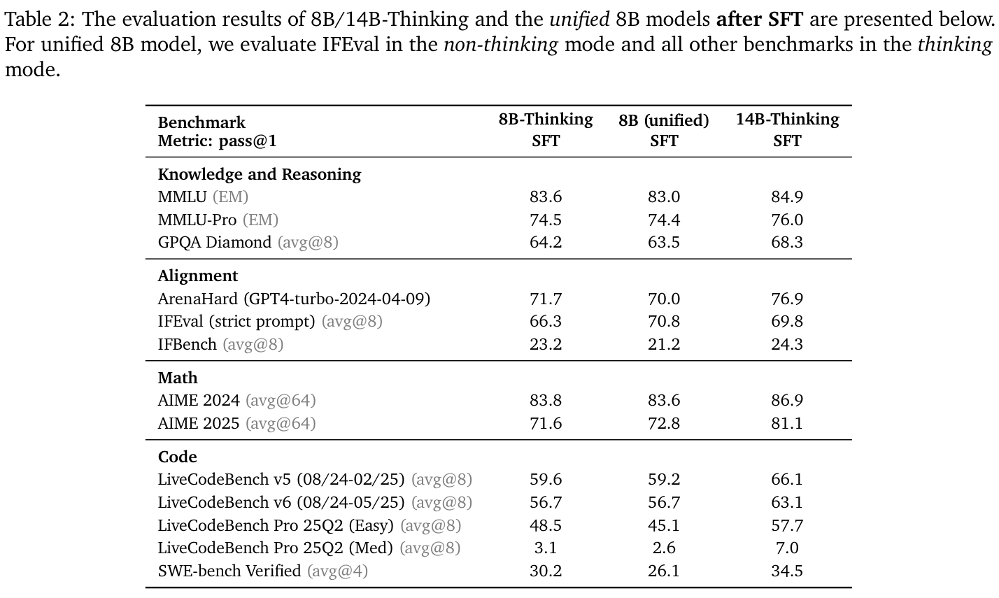
面向 LLM 的级联跨领域 RL 在结构上有几处差异，可以缓解这一问题：
在整个 级联 RL 过程中，我们遵循 AceReason-Nemotron（Chen et al., 2025），采用 GRPO 算法（Shao et al., 2024），进行严格 on-policy 训练。我们采用 on-policy 训练，以改善稳定性并提高准确率。我们使用 verl 代码库（Sheng et al., 2025）进行训练。
每次迭代中，我们从当前策略 \(\pi _{\theta}\) 生成一组 \(G\) 个 rollout，然后执行一次 gradient 更新。这确保用于收集数据的策略始终与正在更新的策略一致，使重要性采样比率恰好为 1。这种 on-policy 设置有助于稳定 RL 训练并缓解熵坍塌。此外，我们完全移除 KL 散度项，使 GRPO 目标简化为标准 REINFORCE 目标（Williams, 1992），采用组内归一化奖励与 token 级损失（Yu et al., 2025）：
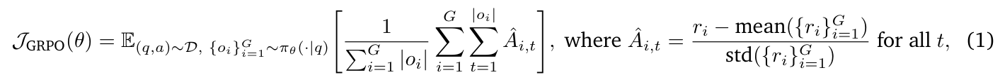
其中 \(\{r_{i}\}^{G}_{i=1}\) 表示，对于从数据集 \(\mathcal{D}\) 抽取的给定问题 \(q\)，分配给采样响应 \(\{o\}^{G}_{i=1}\) 的 \(G\) 个奖励；在 RLVR（例如数学 RL）中，它们针对真实答案 a 进行验证。对于 RLHF，\(r_{i}\) 是 RM 对响应 \(o_{i}\) 和问题 \(q\) 输出的标量。不同领域奖励函数的细节将在相应小节介绍。
本小节描述后文 §4.3 中 RLHF 阶段使用的 RM 的构建。
我们的奖励建模偏好数据集混合开源与内部数据，总共包含 82K 个偏好对。具体而言，我们使用以下开源数据：
受 Park et al.（2024）启发，我们生成额外数据，改善最终偏好数据混合。核心思路是用较强 LLM 的较差响应与较弱 LLM 的较好响应构建偏好对。请注意，诱导较强 LLM 生成较差响应，对数据有效性至关重要；否则，RM 会过于容易区分这些偏好对。
一种具体方法是生成略微偏题的提示，并用它从较强模型获得较差响应。我们用 DeepSeek-V3 重写原始提示来产生这些偏题提示，通过人工检查与采用 LLM-as-a-Judge 的自动评估，确认重写质量较高。具体提示见附录 §C.1。我们探索了作为较弱和较强模型的不同 LLM 组合，最终分别选择 DeepSeek-V3-0324 和 DeepSeek-V3 作为较强、较弱模型。我们还尝试显式指示强 LLM 对给定提示生成存在细微错误的答案；然而，这一方法未成功。
我们采用 Bradley–Terry 目标（Bradley and Terry, 1952），在人类偏好成对数据上训练输出标量的 RM：
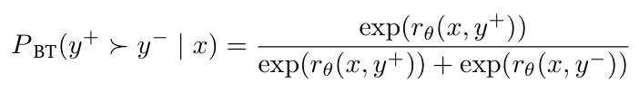
其中 \(y^{+}\) 受偏好，\(y^{-}\) 不受偏好。我们的 RM 以 Qwen2.5-72B-Instruct（Yang et al., 2024）初始化，在其最后隐藏层之上添加线性预测器，通过最大化人类偏好的对数似然训练：
ℒ(θ) = E(x,y⁺,y⁻)∼𝒟 [log PBT(y+ ≻ y− | x)]
对于每个提示，以对比方式比较两个响应——一个受偏好、一个不受偏好——使 RM 学会给受偏好响应更高标量分数，给不受偏好响应更低分数。我们将该标量分数作为模型响应“质量”的代理指标。训练超参数如下：batch size 256、learning rate 2e-6、AdamW 优化器（Loshchilov and Hutter, 2017）、1 个 epoch。请注意，我们也实验了更长训练计划，但发现单个 epoch 取得最佳结果。
本研究主要采用 RewardBench（Lambert et al., 2024），评估并选择用于 RLHF 过程的 RM。实践中，我们发现 RewardBench 分数低的 RM，通常导致 RLHF 后策略对齐较差。然而，RewardBench 分数最高的 RM 未必产生对齐最佳的策略模型（即通过对齐基准衡量的结果），因为 RewardBench 可能是识别 RLHF 最优 RM 的不完美代理，而 RLHF 过程本身也引入额外方差。已有研究持续尝试建立稳健的 RM 基准，使其成为更可靠的代理指标，用来识别可能产生最佳最终对齐的 RM。然而，目前对于应使用的标准基准仍无普遍共识。
我们进行消融研究，以决定主干 LLM 的选择，主要发现如下：
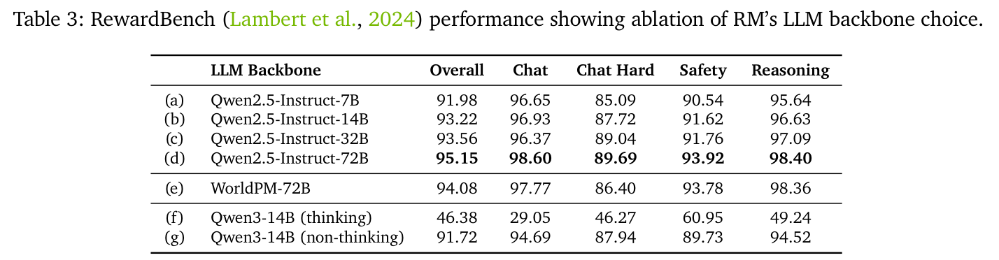
本小节描述我们的 RLHF 配方，它作为 级联 RL 过程的第一阶段。我们发现，RM 的泛化能力在确保稳定 RLHF 训练方面发挥关键作用，较大的 RM（例如 72B RM）对策略 LLM 生成的分布外（OOD）样本更具韧性。
我们发现，在 RLHF 阶段引入 RM 的 OOD 提示，经常因不准确或误导性的奖励信号导致不稳定，甚至训练崩溃。因此，在 RLHF 阶段，我们使用 §4.2 描述的 RM 偏好数据集中的提示子集。此外，我们排除数学和竞争性编程相关提示，因为 RM 提供的奖励信号可能不如后续数学 RL 和代码 RL 阶段采用的基于规则或执行的验证器可靠。例如，在早期实验中，我们观察到，RLHF 中不排除数学相关提示会使 AIME25 基准性能下降 2%。因此，我们的 RLHF 数据集主要关注提高有用性、无害性及与人类偏好的对齐，同时与后续 级联 RL 阶段将增强的领域保持不重叠。
RLHF 帮助 LLM 更好地遵循用户意图并与人类偏好对齐。我们还观察到，RLHF 提升整体生成质量；有趣的是，尽管我们整理的 RLHF 数据集不包含任何数学或代码相关提示，它仍提升数学和代码基准上的推理性能。此外，RLHF 倾向于减少重复和冗长，从而压缩较简单问题的思考 token 数。这又提高后续数学 RL 与代码 RL 阶段的推理效率和训练稳定性。因此，我们设计的 级联 RL 流程从 RLHF 阶段开始。我们的 RLHF 训练从 SFT checkpoint 初始化，采用 GRPO 算法，并遵循 §4.1.2 的统一 RL 训练配置（例如 on-policy、token 级损失、无 KL 散度）。对于专用思考模型，我们自然在思考模式进行 RLHF。对于统一模型，我们同时在非思考和思考模式进行 RLHF 训练，将每个 batch 中的提示平均分配到各模式。§6.1 提供进一步研究。
RLHF 训练将 RM 产生的奖励分数用作奖励函数。具体而言，我们提取模型答案，将它与对应问题拼接，应用 RM 的聊天模板，然后将格式化输入送入 RM，得到逐点奖励分数。对于运行于非思考与思考模式的 LLM，我们采用不同答案提取方式：非思考模式直接提取 assistant 角色后的模型答案；思考模式则排除推理轨迹，只提取思考过程后的最终总结（即 <\think> token 后的模型生成）。如果思考过程没有正确结束（即缺少 <\think> token），我们退回到将整个未完成响应发送给 RM。这种不完整的
（接下一页）
（续上一页）
生成通常获得较低奖励分数，因为 RM 未在未完成或未见过的推理轨迹上训练，因而有效惩罚冗长或不完整的思考过程。训练时，我们在 RLHF 中对 8B 和 14B 模型均使用 12K 最大响应长度，不进行超长过滤，从而鼓励更简洁的生成。
为防止生成中混用语言，如果提示完全为英文，而生成响应（包括思考轨迹和总结）包含非英文 token，我们应用额外的语言切换惩罚。由于 RM 的奖励分数无界，我们自适应地将混合语言生成的奖励设为 batch 最低分减 10，确保它们在 GRPO 算法中获得最低相对分数，从而对语言切换行为施加最强惩罚。我们不采用额外奖励塑形技术，因为 72B RM 的奖励信号已具有高质量。
对于我们的 8B 和 14B 模型，RLHF 中均使用 12K 最大响应长度，不进行超长过滤，有效鼓励更简洁的生成。我们采用 batch size 128，每个提示生成 8 个 rollout，temperature 为 0.6、top-p 为 0.95。我们采用 AdamW（Kingma, 2014），learning rate 为 2e-6，并将熵损失系数和 KL 损失系数均设为 0。训练约需 800 步。训练超参数更多细节见附录 D。
RLHF 后，8B 与 14B 模型的结果见表 4。可以观察到，除 IFEval 外，几乎每个基准都有显著提升。主要原因是，RLHF 过程惩罚过长、冗长及重复的生成，尤其是在思考模式中，大幅改善响应质量。对于 IFEval 性能下降，主要原因是 RLHF 训练提示与 IFEval 测试提示之间不可避免的语义重叠。此外，RLHF 使用的 RM 鼓励人类偏好的响应品质，这些品质可能与验证器评估的严格指令遵循约束冲突。我们认为，训练同时能够处理严格指令遵循约束的更强 RM（例如大型生成式 RM（Wang et al., 2025）），可以缓解此问题。我们将其留作未来工作。下一小节将再次讨论这一点。
可验证的指令遵循是确保 LLM 能够精确遵循人类指令的关键方面。尽管 SFT 数据混合已包含指令遵循数据，应用可验证奖励的 IF-RL 仍进一步提升指令遵循准确性。
我们使用 Llama-Nemotron（NVIDIA, 2025）的指令遵循数据集，它包含合成生成的提示，每个提示包含一至十个由 IFEval 分类体系（Zhou et al., 2023）派生的详细指令约束。然而，我们发现这一数据集由于其合成性质，存在较多噪声。为提升整体质量，我们进行大量预处理和过滤，将 56K 样本减少为 40K 高质量样本。此外，我们整理了 60K 个自定义数据样本，提高数据混合的多样性；它们采用来自 LMSYS-Chat-1M（Zheng et al., 2023）的用户提示，搭配 IFEval 分类体系中的各种指令约束。我们还纳入 Pyatkin et al.（2025）的 IF-RLVR 训练数据，它旨在增强对未见约束分类体系的稳健性。这一数据集包含与指令约束搭配的提示，约束取自 IFEval 分类体系或 IF-Bench-Train 分类体系（Pyatkin et al., 2025），基础提示从 Tulu-3-SFT（Lambert et al., 2025）采样。
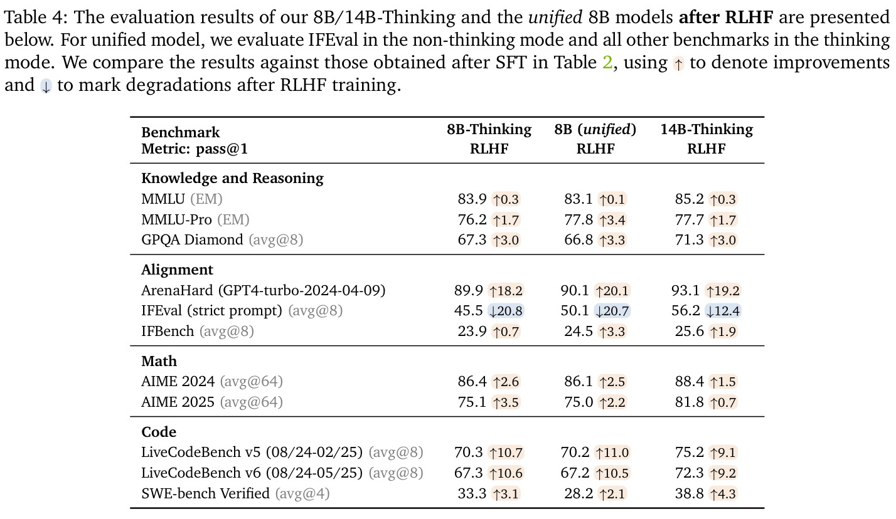
IF-RL 训练分两个阶段进行，每阶段使用不同数据混合，难度逐渐增加。第一阶段关注 IFEval 分类体系的指令约束，第二阶段关注 IF-Bench-Train 分类体系。我们发现，动态过滤（Yu et al., 2025）通过确保 batch 中所有提示都有有效 gradient，大幅稳定 IF-RL 训练，并改善两个阶段的结果。
IF-RL 阶段的主要挑战之一，是缓解 IF-RL 对 RLHF 阶段获得的人类对齐能力可能产生的负面影响（例如通过 ArenaHard 衡量）。在早期实验中，我们观察到，直接采用基于规则的 IF 验证器作为奖励函数，会降低人类对齐结果。这是因为基于规则的 IF 验证器仅关注响应是否遵循指令指定的约束，不考虑整体响应质量。例如，对“在 300 词内写一个总结”这一提示，一个写得很差的答案，只要词数保持在 300 以下，仍能获得完整奖励。
对于统一推理模型，出现了一种有效策略：先在思考与非思考模式中进行 RLHF，再仅在非思考模式应用 IF-RL。这种方法最大限度减少 RLHF 和 IF-RL 之间的相互负面干扰，同时仍显著提升模型在思考模式下的指令遵循能力（即我们的 8B 统一模型在思考模式取得 IFEval 85.3）。我们推测，与思考模式相比，对经过 RLHF 训练的模型在非思考模式应用 IF-RL，生成低质量响应的可能性远低，因此对基于规则的 IF 验证器进行 reward hacking 的可能性也低得多。我们还实验了颠倒 RLHF 和 IF-RL 顺序，但观察到明显更差的结果。在第一和第二阶段 IF-RL 训练中，我们对统一推理模型将最大响应长度设为 8K token，不应用超长过滤。
另一方法是在 IF-RL 中设计同时考虑人类偏好和精确指令遵循能力的奖励函数。对于专用思考模型，这对缓解 IF-RL 对 ArenaHard（Li et al., 2024）等基准的负面影响至关重要。
我们结合基于规则的指令遵循验证器与人类偏好 RM 的信号，兼取两者优势。对于给定提示 \(q\) 与一组生成响应 \(\{o_{i}\}^{G}_{i=1}\)，每个响应 \(o_{i}\) 的奖励定义为：
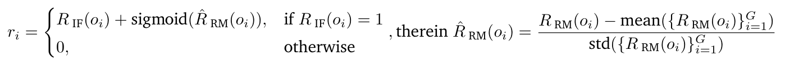
其中 \(R_{IF}(o_{i}) \in \{0, 1\}\) 指指令遵循验证器的二元奖励，\(R̂_{RM}(o_{i})\) 是来自与 RLHF 阶段相同 RM 的组内归一化奖励（均值 = 0，标准差 = 1）。对 \(R̂_{RM}\) 应用 sigmoid 函数，将值缩放至 (0, 1) 范围，确保在聚合前与 \(R_{IF}\) 具有相同尺度。
随后，我们使用 §4.1.2 描述的同一 GRPO 目标，纳入组合奖励，进行 IF-RL。对于专用思考模型，在第一阶段 IF-RL 训练中，我们将最大响应长度设为 8K token，并应用超长过滤；在第二阶段将其提高至 16K token，同样应用超长过滤，以容纳思考模式下困难提示所需的更长推理。
对于 8B 和 14B 模型，我们均采用 batch size 128，每个提示采样 8 个响应，temperature 0.6、top-p 0.95、top-k 20。我们采用 AdamW（Kingma, 2014），learning rate 为 2e-6，将熵损失系数与 KL 损失系数均设为 0。对于非思考模式 IF-RL，第一阶段训练约需 2000 步，第二阶段训练需 1000 步。对于思考模式 IF-RL，第一阶段训练约需 500 步，第二阶段训练约需 300 步。更多训练超参数细节见附录 D。
IF-RL 后的结果见表 5。对统一模型和专用思考模型应用改进技术后，我们观察到 IFEval 与 IFBench 显著提升，而 ArenaHard 的小幅下降得到控制。我们还发现，IF-RL 通常降低模型熵，并缩短平均推理 token 长度（示例见图 8）。负面影响是，这会导致推理基准小幅下降，尽管其中大多数（ArenaHard 除外）在后续数学 RL、代码 RL 和 SWE RL 阶段完全恢复，并进一步提高。正面影响是，它压缩推理轨迹并提高 token 效率。总体而言，统一推理模型比专用思考模型实现更好的平衡，在 ArenaHard 和 IFEval 上均表现稳健。
本小节介绍数学 RL 阶段，该阶段专注于通过强化学习增强模型的数学推理与解题能力。在最终模型训练中，数学 RL 在指令遵循 RL 阶段之后应用。直接对 RLHF checkpoint 应用数学 RL 取得非常相近的结果。
我们主要使用 AceReason-Math 数据集（Chen et al., 2025），过滤过于简单的问题，保留 18K 个高质量数学问题进行 RL 训练。该数据集合并 DeepScaleR 混合（Gao et al., 2024; Luo et al., 2025; Min et al., 2024）和 NuminaMath（Li et al., 2024），涵盖代数、几何、组合数学与数论等主题。我们应用 9-gram 过滤，防止与 AIME 2024/2025 和 MATH（Hendrycks et al., 2021）等常用数学基准产生污染。我们进一步排除不适合使用基于符号规则验证进行 RL 的问题，例如多项选择题或判断题（答案容易猜中）、证明题（正确性难以验证）、包含多个子问题的问题、非英语问题（增加语言混用），以及
（接下一页）
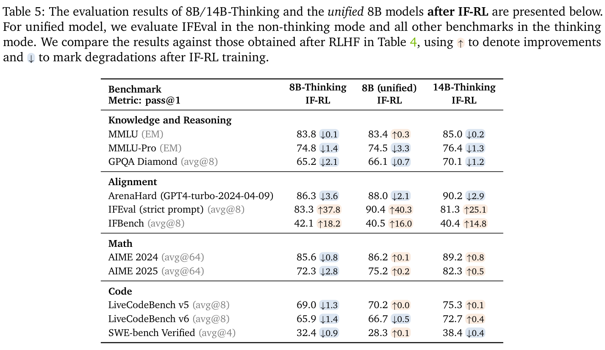
（续上一页）
引用图形的问题。因为 NuminaMath 包含 OCR 与解析错误，每个问题都由 DeepSeek-R1 模型最多尝试八次进行验证。基于规则的验证器仅保留多数投票得到正确答案的问题，丢弃模糊或含噪声的条目。最后，我们移除过于简单的问题，即 AceReason-Nemotron-7B（Chen et al., 2025）在 16 个样本中能以 ≥75% 成功率解决的问题，将数据集规模从原始 49K 减少至 14K 个问题。
我们的目标是开发通用数学 RL 配方，能够用于不同基础模型，并高效扩展至大规模 RL 训练。我们基于 AceReason-Nemotron（Chen et al., 2025）的训练策略，它严格遵循 GRPO 目标下的 on-policy 训练，完全移除 KL 正则化，并结合长度扩展训练与动态过滤，以稳定优化。我们发现，从经过 RLHF 训练的模型初始化数学 RL，对取得更好性能发挥关键作用。在开发周期中，我们将这一训练配方用于五个不同的 8B checkpoint，始终在 500 个 RL 步内取得 AIME24 约 90% 的准确率，证明该方法对具有不同训练动态的模型具有稳健性。下面详细介绍每个组成部分。
在早期研究中，我们探索了先应用数学 RL 和代码 RL、再进行 RLHF 与 IF-RL 的方法。后来，我们发现从经过 RLHF 训练的模型初始化数学 RL 非常有益，因为它（i）提供比 SFT checkpoint 强得多的初始数学推理能力——RLHF 后响应质量显著改善，推理的 token 效率更高（例如减少冗长和重复）；以及（ii）显著减少数学 RL 训练所需步数。
实践中，我们将 IF-RL 插在 RLHF 与数学 RL 之间，因为 IF-RL 降低模型熵并缩短推理轨迹，可能暂时损害推理相关基准。IF-RL 后采用高温度的数学 RL 和代码 RL，可以将模型熵恢复到正常水平。
奖励严格根据答案正确性分配：提取 <\think> token 后的框中答案（\\boxed{}），并使用 AceMath（Liu et al., 2024）基于规则的验证器验证（正确为 1，错误为 0）。为防止推理过程中混用语言，当推理链中检测到与原始提示语言（例如英语）不同的语言（例如中文）token 时，我们施加语言切换惩罚，赋予 −1 奖励。
性能提高的关键驱动因素，在于模型能够更深入思考并生成更长推理链。我们采用具有自定义配置（24K → 32K → 40K）的分阶段响应长度扩展课程，各阶段分别发挥不同作用：压缩过长推理、稳定推理长度，最后扩展更长推理链。从压缩阶段（即 24K）开始的一个关键益处，是将不同初始模型带入一致的推理长度范围（在完整训练集上约 16K），使后续训练阶段能够有效用于不同初始模型，无须大量超参数调优。
为简化开发，我们在所有数学 RL 实验中固定种子数据集。然而，由于模型能力不同，采用组内归一化优势函数时，过于简单或无法解决的问题不提供有用的策略 gradient 信号。为解决这一问题，每个 epoch 之后，我们依据该 epoch 的 RL 训练验证结果，过滤准确率为 100% 或 0% 的问题。被过滤的困难问题以 10% 概率重新采样回数据集，因为策略可能在同一 epoch 的后续更新中学会解决它们。简单问题重新采样回数据集
（接下一页）
1 我们依据早期 checkpoint 的问题准确率，将 AIME24/25 每个问题分为简单（80–100%）／中等（30–80%）／困难（0–30%）。
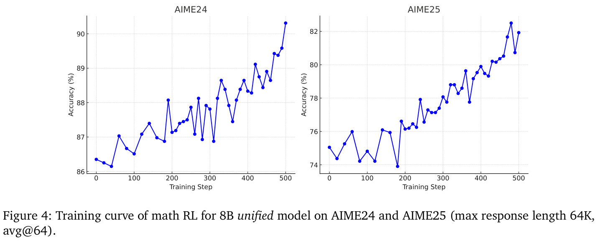
（续上一页）
的概率为 1%，以稳定训练，因为策略可能在一个 epoch 内遗忘如何解决它们。这确保约 90% 的训练样本贡献有意义的学习信号，并显著稳定训练期间的模型准确率，尤其是在更多问题达到 100% 解决率的训练后期。请注意，这种基于 epoch 的动态过滤可以视为比基于 batch 的动态采样（Xiaomi et al., 2025; Yu et al., 2025）更高效的替代方案，因为后者需要显著更多 rollout，才能构建不含过于简单或无法解决提示的固定大 mini-batch。
我们采用 batch size 128，每个提示采样 8 个响应，temperature 1、top-p 0.95。我们采用 AdamW（Kingma, 2014），learning rate 为 2 或 \(2.5 \times 10^{-6}\)，将熵损失系数与 KL 损失系数均设为 0。每个训练阶段约需 100 到 200 步，取决于 clip-ratio 达到 10% 的速度。对于 8B 模型，我们采用三阶段训练，长度从 24K → 32K → 40K 扩展。对于 14B 模型，由于初始策略已达到较高准确率，我们从 28K 最大 token 长度开始，避免第一阶段准确率下降，然后直接扩展至 40K。更多训练超参数细节见附录 D。
我们通过跟踪 8B 统一模型在 AIME24 与 AIME25 上的性能，监测其数学 RL 训练动态，如图 4 所示。数学 RL 后的结果见表 6。我们观察到 AIME 2024 和 2025 上有明显提升。总体而言，数学 RL 对知识推理和对齐基准的影响很小。观察到的大多数差异可归因于评估方差与 checkpoint 选择。数学 RL 改善代码基准，包括 LiveCodeBench 和 SWE。尽管收益不如 AceReason-Nemotron（Chen et al., 2025）报告的那么明显，这主要是因为我们的起始模型在数学 RL 前已具有较强通用推理能力。
本小节介绍代码 RL 过程，它专注于通过强化学习提高模型竞争性编程性能。我们将代码 RL 应用于数学 RL 后获得的模型 checkpoint。
我们基于 AceReason-Nemotron 代码语料库（Chen et al., 2025）构建代码 RL 训练数据集，主要整理自包含单元测试的开源数据集，包括 TACO（Li et al., 2023）、APPS（Hendrycks et al., 2021）、DeepCoder（Luo et al., 2025）等。这些问题覆盖广泛的
（接下一页）
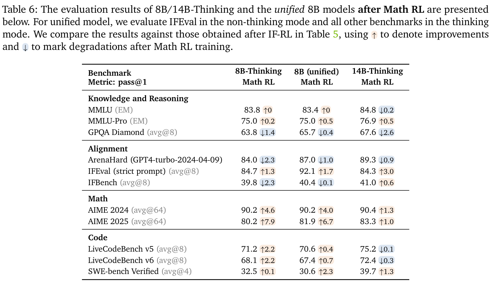
（续上一页）
现代竞争性编程常见算法主题。我们应用严格过滤规则，排除与标准输出比较不兼容的问题（例如交互式格式或需要特殊判题器的问题），以及对边界与极端情况单元测试覆盖不足的问题。这一过滤过程显著减少训练中的假阳性与假阴性奖励信号；已知这些信号会降低代码 RL 性能（Chen et al., 2025）。
我们进一步使用 9-gram 过滤和原始问题 URL 匹配，严格验证训练集，去除重复并防止基准污染。为校准问题难度，我们用 AceReason-Nemotron-7B（NVIDIA, 2025）排除简单问题（8 次 rollout 全部解决），并用 DeepSeek-R1-0528（DeepSeek-AI, 2025）过滤无法处理或过于困难的问题（8 次 rollout 全部未解决），得到包含 9.8K 样本的最终训练集。
我们在数学 RL 之后进行代码 RL，因为数学 RL 阶段能够有效 warmup，稳定未来 RL 训练并增强模型通用推理能力（Chen et al., 2025）。遵循 AceReason-Nemotron 配方，我们从最终数学 RL 模型 checkpoint 初始化，执行单阶段、on-policy 代码 RL（无 KL 正则化，采用 §4.1.2 的 token 级损失）。训练期间，最大响应长度设在 44K–48K 范围内，不应用超长过滤。
代码 RL 采用严格的基于规则的二元奖励函数：仅当生成代码通过给定问题的全部测试用例时，赋予奖励 1；否则赋予奖励 0。为高效、稳健地评估，我们使用 AceReason Evaluation Toolkit 的并行代码验证器，验证模型生成代码的正确性。此外，由于代码验证产生显著开销，我们在 VeRL（Sheng et al., 2024）中采用异步奖励计算。该异步计算显著减少每个 batch 的平均代码验证时间。例如，在 8 个 DGX H100 节点上，以 batch size 128、rollout 8 训练代码 RL 时，验证时间从 1172.4 秒降至 416.2 秒。
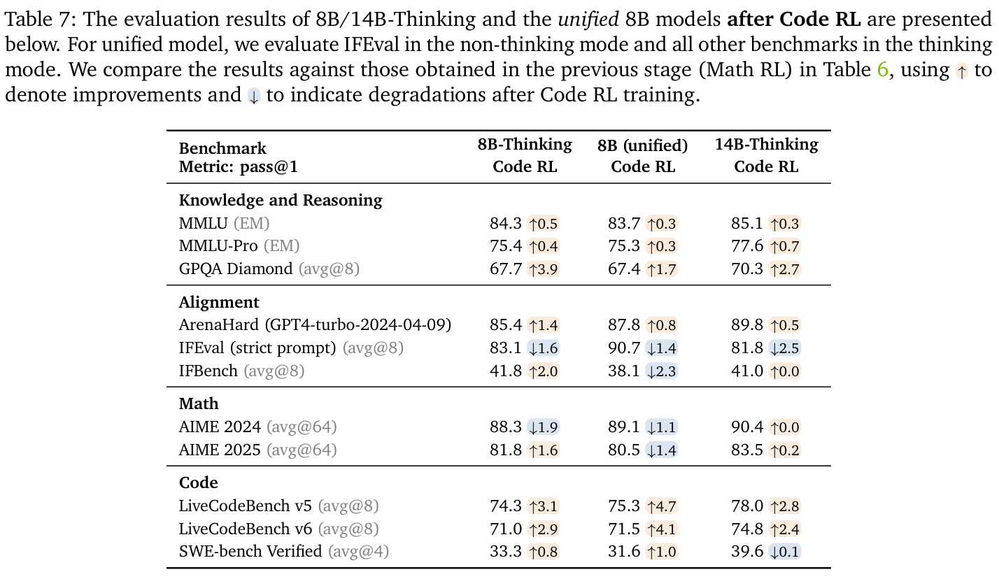
与数学 RL 类似，我们也施加语言切换惩罚：当推理轨迹中检测到不同于原始提示语言的 token 时，赋予奖励 0。不同于数学 RL，我们发现为语言切换赋予 −1 奖励会负面影响编程性能。这很可能是因为，在组内全部 rollout 要么错误、要么存在语言混用时，额外惩罚在 GRPO 训练中鼓励模型生成不切换语言的错误答案。
我们将 batch size 设为 128，采用 AdamW 优化器，learning rate 设为 \(4 \times 10^{-6}\)，每个训练提示使用 8 个 rollout。我们将采样 temperature 设为 1.0，top_p 设为 0.95，因为我们发现代码 RL 对温度配置敏感。详细超参数见附录 D。
代码 RL 后的结果见表 7。我们观察到 LiveCodeBench（LCB）上有很大提升。例如，统一 8B 在 LCB v5 上达到 75.3、LCB v6 上达到 71.5，与 DeepSeek-R1-0528（671B）分别为 74.8 和 73.3 的性能相当。我们的 14B-Thinking 在 LCB v5 上达到 78.0、LCB v6 上达到 74.8，以明显优势超越 DeepSeek-R1-0528。由于 DeepSeek-R1-0528（671B）是 SFT 期间使用的教师模型，这些结果突出表明，即使对于小型 8B 和 14B 模型，级联 RL 在加强代码推理能力方面也极为有效。除正常 checkpoint 和评估方差外，代码 RL 对其他领域基准也仅有很小影响。
我们的 Nemotron-Cascade 模型出色的代码能力在 §5 进一步考察。
在 §3.3.2 中，我们为 SWE-bench（Jimenez et al., 2023）采用 Agentless 框架，将 SWE 任务分解为定位、修复与补丁验证三个子任务。我们相应地为各子任务构建 SFT 数据。其中代码修复最为关键，需要最高水平的推理与模型能力，以生成修订代码补丁，修复 bug 并解决底层问题。因此，SWE 的 RL 过程主要设计为提高代码修复准确率。
如 §3.3.2 所述，代码修复的 RL 数据集包含比 SFT 阶段更具挑战性的实例。具体而言，我们保留以下提示：八个采样响应中少于四个超过 0.5 相似度阈值，同时 DeepSeek-R1-0528（DeepSeek-AI, 2025）的八个响应中至少一个达到非零相似度（表明提示并非过于困难或无法解决）。
在 SFT 阶段，我们的模型以 32K 最大总序列长度微调。相应地，我们构建仅包含真实定位文件的提示——即所有含 bug 或需要修改以解决问题的文件——作为代码修复参考。然而，在 Agentless 框架下评估模型性能时，我们向模型提供定位阶段检索出的文件内容，作为代码修复输入。这种设置在 SFT 训练与最终评估之间引入差异。为确保真实定位文件纳入修复提示，我们纳入 top-k（\(k \ge 4\)）定位文件，并使用 YaRN 缩放因子 3，将最大提示长度扩展至 60K。
这一设计以两种方式自然给 SFT 模型引入分布外上下文：\(i\)）代码修复中的总输入长度超过 SFT 使用的最大序列长度；ii）纳入 top-k 定位文件可能带来无关文件，使代码修复任务比 SFT 期间更具挑战。
为解决这一问题，我们构建并组合两个长提示子集（最长 \(l\) token），用于 RL 训练：
为进一步提高训练效率，我们对两个子集均丢弃总长度少于 8K token 的提示。在 §7.3 中，我们将消融研究不同 \(l\) 的 RL 训练有效性。
我们将软件工程强化学习（SWE RL）作为 级联 RL 的最后阶段，因为相比通用领域，它是一项更专门的任务。从代码 RL 后获得的 checkpoint 开始，我们使用 GRPO 算法及 token 级损失进行 on-policy RL，同时移除 KL 正则化（详细配置见 §4.1.2）。
此前研究（Jain et al., 2025; Luo et al., 2025）通过在 Docker 环境内执行模型生成的代码补丁获取奖励，进行 RL。然而，运行和管理大量 Docker 实例显著限制可扩展性，使此前工作受限于约 10k 个独特实例的训练数据集。为克服这一限制，我们设计无需执行的验证器作为 RM，使代码修复生成能够进行可扩展 RL 训练。也就是说，我们将奖励 \(r\) 定义为生成补丁 p̂ 与人工标注真实补丁 p* 之间的相似度：
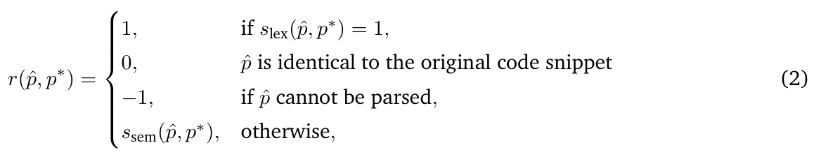
其中 \(s_{lex}(p̂,p*)\) 表示遵循 Wei et al.（2025）、用 Unidiff 库计算的词面相似度，\(s_{sem}(p̂,p*)\) 表示 LLM 产生的语义相似度分数。具体而言，我们向 Kimi-Dev-72B 模型2（Kimi-Team et al., 2025）提供一个是／否问题，评估生成补丁与标准补丁间的语义相似度（见附录 C.2 的奖励建模提示）。“YES” token 的概率直接用作奖励分数。请注意，模型生成补丁无法解析时，我们赋予 −1 奖励；生成补丁与原始代码片段相同时，赋予 0 奖励。奖励函数消融研究见 §7.2。
初步实验研究显示，输入上下文长度与 SWE 任务性能具有很强正相关，具体表现为，纳入更多检索文件进行分析可以显著提升性能。这一发现促使我们设计通过受控上下文扩展利用该关系的训练策略。为优化扩展上下文的利用、同时保持训练稳定性，我们实施精心设计的两阶段课程，逐步将输入上下文长度从 16K 扩展至 24K token，同时保持输出长度恒定为 16K token。这一方法确保稳健学习，避免直接采用长上下文训练时观察到的退化影响。鉴于较小模型长上下文能力有限，它对 8B 模型尤为有效。
我们采用 AdamW 优化器，将 batch size 设为 128，learning rate 设为 \(2.5 \times 10^{-6}\)。每个提示生成 16 个 rollout，采样 temperature 为 1，最大响应长度设为 16K。我们对达到最大响应长度的轨迹应用超长过滤。详细超参数见附录 D。
应用 SWE RL 后的结果见表 8。SWE RL 在 SWE-bench Verified 上带来显著提升，而对其他领域基准的正面或负面影响很小，主要可归因于 checkpoint 和评估方差。我们的 14B-Thinking 模型取得 pass@1 解决率 43.1，已超过近期开放的 32B 专用模型 DeepSWE-32B（42.2）（Luo et al., 2025）和 SWE-agent-LM-32B（40.2）（Yang et al., 2025）。它也明显优于其他 14B 通用开放 LLM，如 Qwen3-14B（27.4）和 Ministral-3-14B-Reasoning-2512（mistralai, 2025）（25.5）。有趣的是，我们发现，专用 8B 思考 SFT 模型和 8B 统一 SFT 模型之间的 SWE-bench Verified 性能差距（表 2 中 30.2 对 26.1）在
（接下一页）
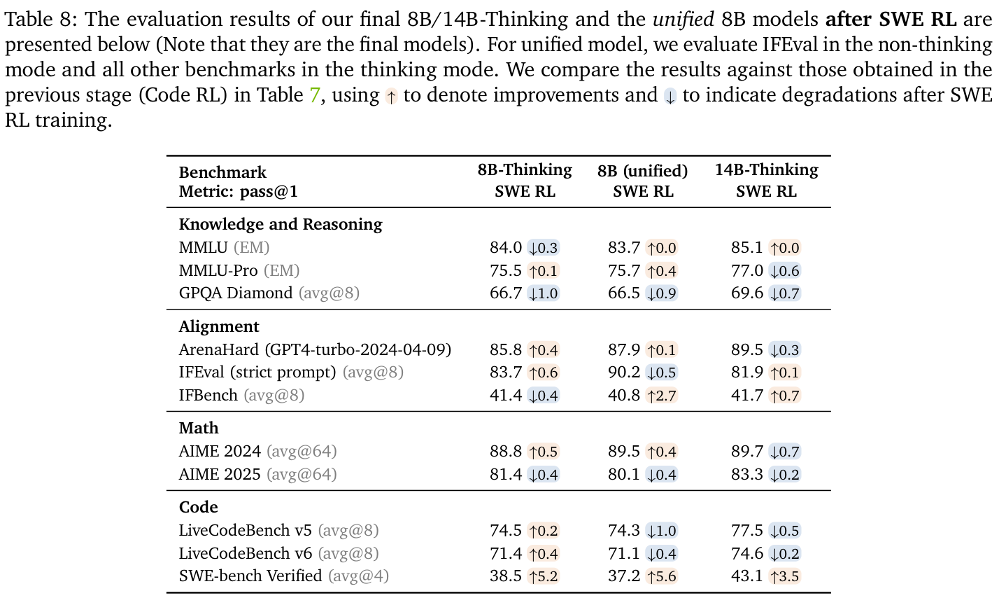
（续上一页）
完整 级联 RL 过程后大幅缩小（38.5 对 37.2）。总之，统一 Nemotron-Cascade-8B 在所有推理相关任务上与 Nemotron-Cascade-8B-Thinking 表现相当，而在指令遵循任务上显著更好。
我们在具有挑战性的竞争性编程基准上评估 Nemotron-Cascade 模型，包括包含近期发布的 AtCoder 与 LeetCode 问题的 LiveCodeBench（Jain et al., 2024），以及包含新发布 Codeforces 问题的 LiveCodeBench Pro（Zheng et al., 2025）。为避免基准污染，我们仅报告训练数据截止日期 08/2024 之后发布问题的准确率。对于 LiveCodeBench，我们评估子集 v5（08/2024–02/2025，279 个问题）和 v6（08/2024–05/2025，454 个问题）。对于 LiveCodeBench Pro，我们使用最近两个子集：2025Q1（01/2025–04/2025，166 个问题）和 2025Q2（04/2025–07/2025，167 个问题）。我们采用 avg@8 设置进行评估，思考预算为 64K token。我们还根据 LiveCodeBenchPro {2025Q1, 2025Q2} 划分中的 51 场 Codeforces 比赛，评估模型 ELO 分数。附录 E 提供 Elo 评级计算的更多细节和分析。
如表 9 所示，Nemotron-Cascade 模型在多个竞争性编程基准上表现强劲，包括 LiveCodeBench 和 LiveCodeBench-Pro 的最新划分。Nemotron-Cascade-8B 显著超过几乎所有近期发布、规模相近的推理 LLM，尽管参数少得多，仍达到与此前最先进蒸馏模型 OpenReasoning-Nemotron-32B（Ahmad et al., 2025）相当的性能。值得注意的是，Nemotron-Cascade-14B-Thinking 模型甚至在全部竞争性编程基准上超过其 SFT 教师 DeepSeek-R1-0528、Qwen3-235B-A22B 和 Qwen3-Next-80B-A3B-Thinking，证明 级联 RL 极其有效。
除标准竞争性编程平台基准外，我们进一步在最具挑战性的竞争性编程比赛之一——2025 年国际信息学奥林匹克竞赛（IOI）——上评估。
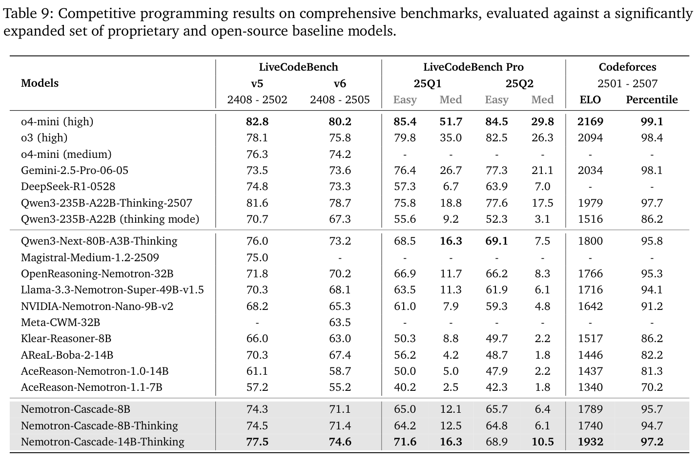
IOI 严格规定每个问题最多提交 50 次，每次有官方判题反馈，但不明确限制为构造这些提交所进行的模型生成次数。为充分利用最强 Nemotron-Cascade 模型的推理能力，我们以总计 128K token 思考预算部署 Nemotron-Cascade-14B-Thinking，并提出如下反馈驱动的 test-time scaling 流程。
整个流程可视为多轮生成–选择–提交流程，每个问题最多 50 轮（每次提交对应一轮）。每轮中，对问题的每个子任务，模型用不同随机种子生成 20 个候选响应。然后过滤（\(i\)）不包含代码的未完成响应，以及（ii）无法通过提供的示例测试用例（如存在）的生成代码。在每个子任务剩余候选生成中，我们应用 Fu et al.（2025）的 Tail-10 选择启发式，得到最终高质量响应，并提交给官方判题器，获得判决及（部分分数任务的）分数。
每轮之后，我们更新各子任务的生成提示，纳入新的官方判题反馈，使后续生成以失败提交历史为条件。具体而言，对于经典问题中每个未解决子任务，我们在下一轮提示中追加该子任务最多 5 个最近提交的代码及相应官方判决。我们有意将历史缓存大小限制为 5，避免对较早失败尝试过拟合，同时仍鼓励模型分析和改进过去的错误尝试。对于部分分数问题，我们则追加最多 3 个先前得分最高的提交，并鼓励模型持续提高分数。
除提交历史外，我们还引入跨子任务启发：子任务解决后，在提示模型处理同一问题、约束不同的其他未解决子任务时，将其正确解决代码作为启发追加。这鼓励模型推理约束之间的关系，并在子任务间转移有用见解。完整提示模板见附录 C.3。
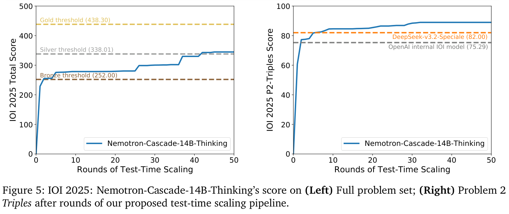
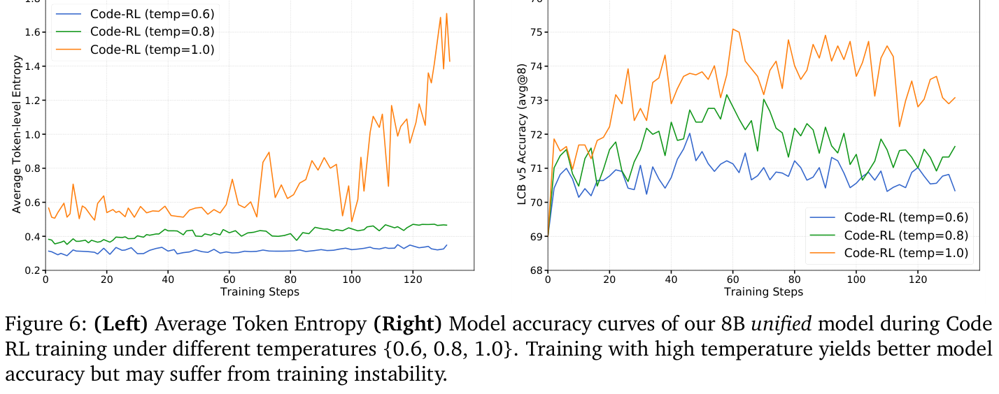
采用这一有效且明确自我改进的 test-time scaling 策略，我们的 14B-Thinking 模型在 IOI 2025 上取得总分 343.37，对应稳健银牌水平，最多进行 1000 次生成（20 次生成 \(\times 50\) 轮），对每个问题官方提交不超过 50 次。值得注意的是，IOI2025 问题 2 Triples 包含一个构造型子任务，需要提出并迭代改进构造算法；我们的流程取得 90.37 分，超过 OpenAI 内部 IOI 金牌模型（75.29 分）和 DeepSeek-V3.2-Speciale（82 分）（Liu et al., 2025）。这证明了我们反馈驱动、自演化的 test-time scaling 方法，在真实且高风险的竞争性编程问题上的有效性。图 5 还展示了逐轮进展。
我们通过以下消融进一步分析代码 RL 训练：
为确定最适合代码 RL 训练的温度，我们在 8B 统一模型上采用 0.6、0.8 和 1.0 温度进行消融实验（RL 曲线见图 6）。尽管较低温度产生更稳定的熵曲线，与较高温度设置相比，它们导致代码推理性能下降。这一模式表明，在代码生成这样大且有噪声的采样空间中，较高温度鼓励探索，并在有限 rollout 预算下提高样本效率。然而，高温度也可能导致训练不稳定，造成熵爆炸。设计既保留高温采样益处、又确保熵稳定的训练框架，是一个
（接下一页）
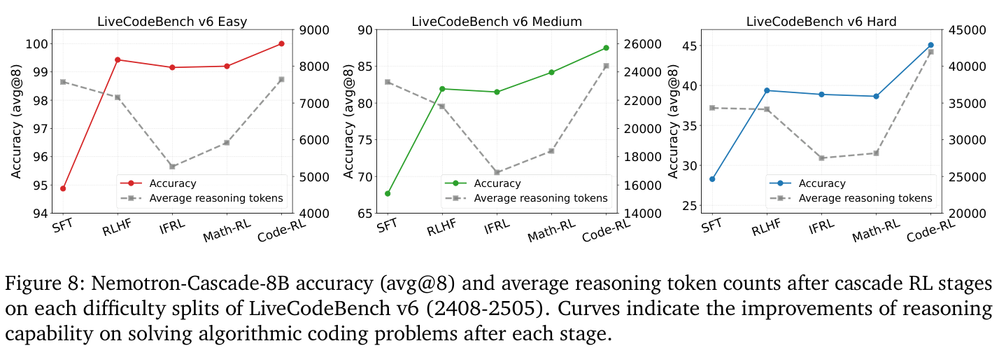
（续上一页）
有前景的未来工作方向。
为评估 级联 RL 流程的渐进有效性，我们分析统一 8B 模型在连续级联 RL 阶段——SFT、RLHF、IF-RL、数学 RL 和代码 RL——之后，LiveCodeBench v6 各难度划分上的平均推理 token 使用量与模型准确率（图 8）。如图所示，初始 RLHF 阶段提供强大基础：显著提高推理 token 效率，缓解 SFT 模型的冗长，体现为推理 token 急剧减少，同时所有难度划分准确率显著提高。随后 IF-RL 阶段进一步鼓励简洁，使 token 使用量额外减少 20%，仅出现可忽略的准确率下降（0.5%）。
我们进一步观察到，初始阶段后简单问题的性能饱和（>99%），提升空间转向中等和困难划分。数学 RL 通过增加 token 使用量增强推理，提高中等问题准确率；代码 RL 则通过显著扩展的推理轨迹，对中等和困难问题带来最终性能提升。
此外，我们进行消融实验，分析 级联 RL 在主题层面如何提高代码能力。我们将 LiveCodeBench v6 问题标注为五个子类别——数学、字符串、图、数据结构、几何——并在图 7 报告统一 8B 模型每个 级联 RL 阶段后的分主题准确率。RLHF 在全部子类别上带来较强初始提升，数学 RL 则主要有利于数学相关主题（数学、图、几何），对更面向计算机科学的主题（字符串、数据结构）提升有限。代码 RL 带来最大准确率增益，改善几乎所有主题的性能。
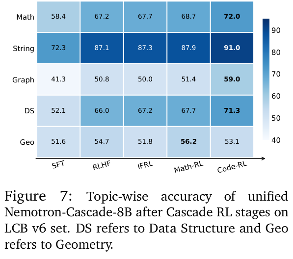
本节介绍我们在选择有效 RM 和设计稳健 RLHF 配方方面的发现。我们展示，采用最大 RM 训练的 RLHF 在 ArenaHard 基准上取得最强性能，尤其是在风格控制（Chiang et al., 2024）下；风格控制帮助区分 LLM 响应中的实质内容与风格偏好。我们还发现，较小 RM 倾向于产生更有噪声的奖励信号，需要奖励塑形和 KL 正则化等额外技术来保持训练稳定性。对于较大 RM，这些技术没有必要：它们的奖励信号足够
（接下一页）
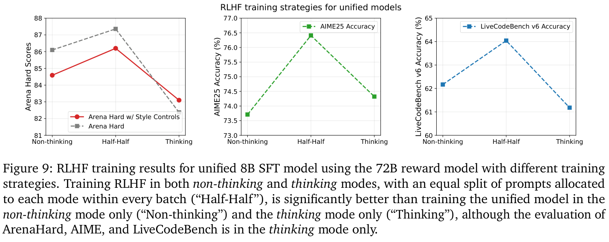
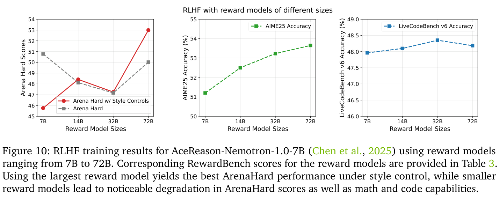
（续上一页）
准确且一致，能够支持稳定 RLHF 训练，并在其他任务上取得更好性能。
由于统一模型能够在思考和非思考模式下响应，自然产生一个研究问题：RLHF 训练应该采用哪种模式，尤其是考虑到许多基准更适合思考模式？为研究这一问题，我们对 8B 统一 SFT 模型（性能见表 2）应用 RLHF，使用第 4.3.2 节描述的相同训练配方，但改变训练模式。具体而言，“Non-thinking” 设置仅在 RLHF 中使用非思考模式；“Thinking” 设置仅使用思考模式；“Half-Half” 设置则将每个 batch 平均分配到两种模式。图 9 结果揭示明确趋势：尽管 ArenaHard、AIME 和 LiveCodeBench 全部在思考模式下评估，采用“Half-Half”设置训练取得最强整体性能，产生最高 ArenaHard 分数，同时提高数学与代码基准性能。这表明，RLHF 中纳入非思考模式样本能够改善跨模式迁移与对齐，在推理和非推理设置中均带来更强通用能力。
RLHF 的一个关键研究问题是如何选择最有效的 RM。为系统研究这一问题，我们训练了一系列从 7B 到 72B 的 RM，并采用
（接下一页）
（续上一页）
§4.3.2 描述的同一 RLHF 配方，对 AceReason-Nemotron-1.0-7B 策略模型3（Chen et al., 2025）进行训练。我们在图 10 报告 ArenaHard 分数及数学和代码基准性能。主要发现汇总如下。
尽管 RL 算法对实现长形式 CoT 推理至关重要，RL 训练可能不稳定，并容易过早崩溃。RLHF 依赖可能含噪声或分布外的基于模型奖励，进一步放大这一问题。本小节汇总我们发现能够有效稳定 RLHF 训练的一组技术（“技巧集”）：
在使用 7B RM 的早期 RLHF 实验中，我们发现应用这些“技巧集”技术显著改善训练稳定性，将稳定 RL 步数从 350 延长至 950，并带来更好的 ArenaHard 分数（表 10）。然而，采用更强 RM（例如 72B）时，RLHF 训练本已稳定，如表 11 所示，省略这些技术取得与采用它们相当、某些情况下略好的下游性能。我们的结论是
（接下一页）
3 我们在早期 RLHF 实验中使用 AceReason-Nemotron-1.0-7B 作为策略模型，并对其进行消融。
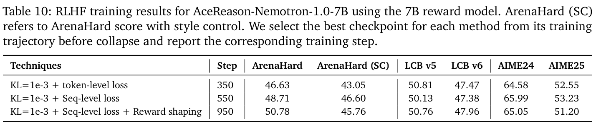
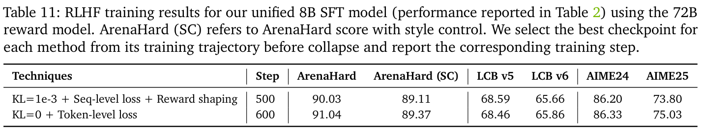
（续上一页）
这些技术应当视为仅在训练出现不稳定迹象时使用的工具箱。否则，§4.3.2 描述的 RLHF 配方已经足够。
本节介绍 SWE 任务的改进技术，并提供相应消融结果。
对于文件定位阶段，我们采用结合基于生成和基于检索方法的双重策略。在基于生成的方法中，如附录 C.2 所示，指导模型依据问题描述与代码库结构推断可能含 bug 的文件。为进一步增强该方法，我们汇总多个 rollout 的结果，按候选文件出现频率排序；排名较高的文件在各 rollout 中出现得更一致（Wang et al., 2023）。
然而，这种基于生成的方法仅能访问代码库结构（即文件夹和文件名称），而非代码内容。为补充这一点，我们使用代码 embedding 模型 NV-Embed-Code（Sohrabizadeh et al., 2025），检索代码内容在语义上与问题上下文相似的候选文件。4 最后，采用倒数排名融合（Cormack et al., 2009）聚合两种方法的结果，确定最终相关文件集合，超参数 \(k\) 设为 0，有效整合两种定位信号的互补优势。
为评估代码定位性能，我们衡量不同截断位置（top-k）的召回率。具体而言，如果某实例所有需要修复的真实文件都出现在 top-k 检索候选中，则定位视为成功（recall = 1）；否则该实例召回率定义为 0。图 11 展示不同代码定位方法在 SWE-bench Verified 基准上的性能。
首先，我们观察到基于检索的方法超过基于生成的方法。这一提升很可能是因为，基于检索的方法编码每个代码库完整源代码内容，而基于生成的方法识别可能相关文件时仅依赖代码库结构。其次，当汇总多个 rollout 的结果时，基于生成的方法在靠前排名与更大排名截断处均表现出稳定提升。这表明，聚合不仅提高靠前排名的准确率，也促进代码定位的排名多样性。最后，用倒数排名融合结合基于生成与检索的方法，带来少量额外提升，尤其是在
（接下一页）
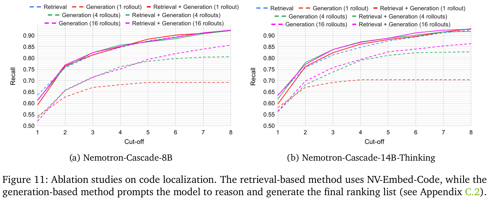
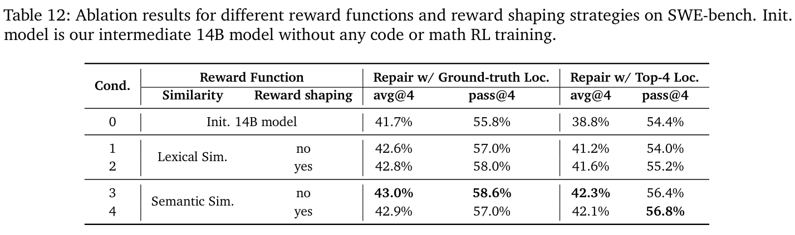
（续上一页）
低于 5 的截断位置。在全部实验中，我们默认直接使用基于生成（16 个 rollout）与检索方法的倒数融合。
如 §4.7.2 所述，我们使用式（2）定义的无需执行的奖励进行代码修复 RL 训练。也就是说，给定人工编写的标准补丁，我们使用词面相似度——遵循 Wei et al.（2025），用 Unidiff 库计算——或 Kimi-Dev-72B 模型产生的语义相似度分数，将其与模型生成补丁进行相似度比较。
在消融研究中，我们比较这两种相似度计算方法。我们从未经数学和代码 RL 的中间 14B 模型之一（表 12 的条件 0）初始化，用不同相似度分数作为奖励函数进行代码修复 RL 训练。除将 rollout 设为 8 外，我们遵循 §4.7.2 的超参数；RM 消融采用最大提示长度 24K 的训练数据。我们在两种设置下评估训练后的模型：\(i\)）提示提供真实定位文件；ii）使用生成–检索方法获得的 top-4 定位文件。
对于基于语义相似度的 RM，我们直接采用式（2）定义的原始奖励函数。对于词面相似度，我们将该奖励函数中的 \(s_{sem}(p̂,p*)\) 替换为 \(s_{lex}(p̂,p*)\)。表 12 报告采样 temperature 0.6 下四次运行的平均解决率，以及 pass@4；即，如果一个实例在四次生成中至少一次成功修复，就视为已解决。
首先，我们观察到 RL 训练通常增强模型代码修复有效性，使用语义相似度作为 RM 比词面相似度更有效（条件 4 对 2）。其次，我们对两个 RM 均采用奖励塑形，将低于 0.5 的奖励设为 0。
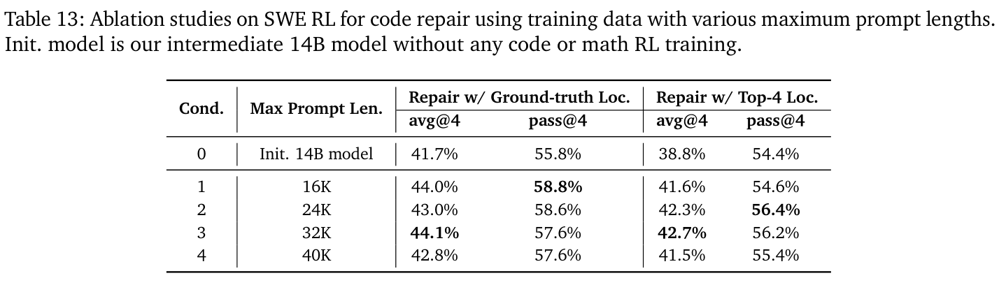
这一调整提高词面相似度 RM 的有效性（条件 2 对 1），表明奖励塑形帮助过滤含噪声监督信号。特别是，词面相似度低于 0.5 时，奖励倾向于为模型训练提供不可靠指导。然而，将奖励塑形用于语义相似度时，我们没有观察到相同效果（条件 4 对 3），说明即使代码相似度低，语义相似度仍持续提供有意义的训练信号。因此，我们在 SWE RL 训练中采用默认奖励函数设置（表 12 的条件 3）。
总体而言，我们证明，采用基于 LLM、无需执行的 RM，是扩展 SWE RL 训练的有前景方向。我们将 RM 训练的探索留作未来工作。
为确保提示包含全部有 bug 的代码补丁，我们用多个检索文件的代码内容组成长提示。然而，初步研究显示，当输入提示长度超过 24K、同时响应长度为 16K 时，代码解决率显著下降。我们推测，次优代码解决率是因为 SFT 使用 32K 最大序列长度，继承自 Qwen3-8B/14B-Base 模型的 32K 上下文窗口。因此，在 RL 阶段，我们混合模型检索出的噪声文件和真实文件，创建更长提示的训练数据。
表 13 消融了使用不同最大提示长度构建的数据进行训练（更多细节见 §4.7.1）。我们观察到，从 16K 到 32K，采用更长提示训练有助于提高模型修复能力。我们将提升归因于模型处理更长上下文提示的能力；这对修复任务尤为重要，因为修复时模型需要在所有检索代码内容中识别和修复有 bug 的代码补丁。然而，最大提示长度扩展至 40K 时，训练有效性降低。我们推测，模型在如此长提示下表现较差，使 rollout 为 RL 训练引入更多噪声，或者预训练 Qwen3-14B-Base 在 32K 上长上下文能力有限。因此，在最终 8B 与 14B 模型的训练数据中，我们分别将最大提示长度设为 24K 和 32K。
为进一步提高代码修复准确率，我们采用 test-time scaling（TTS）策略，通过在推理期间聚合和过滤多个候选补丁增强模型性能。如 §3.3.1 概述，模型采用基于温度与 top-p 的 decoding，生成多样的候选修复补丁和复现测试。然后，每个候选补丁通过补丁验证阶段评估，应用回归与复现测试，识别最可靠修复。
对于 SWE-bench Verified 基准，我们的 TTS 流程为每个实例生成 \(k\) 个候选修复补丁及 40 个复现测试，然后首先评估各补丁通过多少已有回归测试，再执行经过整理的生成复现测试子集，识别最有希望的修复，从而过滤和排序候选补丁。最终选择综合通过率最高的补丁，
（接下一页）
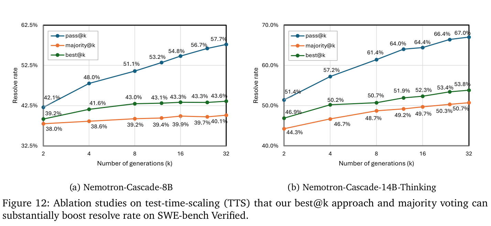
（续上一页）
平局先通过多数投票、再通过最短解决方案长度打破。我们将这种排序与选择流程称为 best@k。这一方法拓宽解决方案搜索空间，通过探索多条推理轨迹增强稳健性，并显著提高产生正确修复的可能性。
图 12 展示（\(a\)）Nemotron-Cascade-8B 和（\(b\)）Nemotron-Cascade-14B-Thinking 在 SWE-bench Verified 上结合 test-time scaling（TTS）与补丁验证流程评估的结果。如图 12 所示，我们绘制 \(k \in \{2, 4, 8, 12, 16, 24, 32\}\) 下的 pass@k、majority@k 和 best@k。pass@k 随 \(k\) 增加而单调提高，多数投票增长较慢且较早饱和。best@k 始终以明显优势超过 majority@k，证明补丁验证流程有效。对于 Nemotron-Cascade-14B-Thinking，全部指标提升更加明显，反映更强推理能力和生成修复补丁的更大多样性。总体而言，Nemotron-Cascade-8B 与 Nemotron-Cascade-14B-Thinking 均显著受益于 TTS 策略，14B 模型取得与 DeepSWE（Luo et al., 2025）等更大开放权重模型具有竞争力的结果（后者通过采用基于执行验证器的 TTS，解决率达到 52.4%）。这些收益说明，无须修改模型权重，下游过滤与验证仍是提高补丁修复性能的强大机制。
如图 12（\(a\)）所示，Nemotron-Cascade-8B 的 best@32 解决率达到 43.6%，从 \(k = 2\) 时的 39.2% 提高，并随着考虑更多样本逐渐增加。在 TTS 与补丁验证下，模型在 \(k = 32\) 时 pass@k 达到 57.7%，存在 15.6 个百分点差距，反映 best@32 的额外潜在提升空间。多数投票提供较简单替代方法，但在约 39–40% 停滞，随着 \(k\) 增加仅有边际收益。这些结果说明，即使对于较小模型，结构化 test-time scaling 结合验证也能显著提高修复准确率。如图 12（\(b\)）所示，Nemotron-Cascade-14B-Thinking 的整体指标提升更加明显。模型起始 majority@k 解决率为 50.7%，已超过 8B 变体的 best@32 分数 43.6%。在 TTS 策略下，best@k 进一步提高，在约 53.8% 达到平台。此外，pass@k 曲线随 \(k\) 增加持续上升，显示为 14B 模型开发更有效 TTS 策略的巨大潜力。
本节简要回顾相关工作，并说明本研究在已有文献中的位置。
RLHF 在 SFT 或指令微调之后进一步对齐 LLM 方面发挥关键作用（Bai et al., 2022; Ouyang et al., 2022）。传统上，采用预训练 RM 代替人类判断，并在在线训练中提供即时奖励信号（例如 Liu et al., 2024; Wang et al., 2024）。与需要高质量、昂贵标注的 SFT 教师强制训练相比，RLHF 提供更具成本效益、更能泛化的方法，捕捉人类意图的细微之处和语言表达的差别。近期，基于 RM 的强化学习也被探索用于数学推理（例如 Shao et al., 2024; Yang et al., 2024）。然而，由于数学领域奖励建模固有挑战，其成功受到限制（Lightman et al., 2023; Wang et al., 2023; Zhang et al., 2025）。
大规模 RLVR 采用客观、确定性标准（例如数学推理中基于符号规则的验证）提供奖励信号，在开发前沿推理模型方面取得显著成功（例如 Guo et al., 2025; Kimi-Team et al., 2025; Yang et al., 2025）。采用公开数据集的开放 RLVR 配方已开发出来，例如 AceReason-Nemotron（Chen et al., 2025; Liu et al., 2025）、DeepScaleR（Luo et al., 2025）、DeepCoder（Luo et al., 2025）、DAPO（Yu et al., 2025）和 Skywork-OR1（He et al., 2025）。然而，这些开放配方模型主要专注数学与代码推理，不同于通用前沿模型。
通用 DeepSeek-R1 和 Qwen3 的 RL 训练遵循两阶段过程：初始面向推理的 RL 阶段，随后是覆盖所有领域的第二阶段。各阶段采用多样提示联合训练。然而，由于任务间存在显著异质性，这种设计使 RL 基础设施、训练课程与超参数调优复杂化，最终导致次优性能。
本工作介绍 级联 RL 框架，并发布开放训练配方与数据集，用于开发在数学、编程、科学、指令遵循、软件工程与通用领域等不同领域具有强推理能力的通用 LLM。特别是，我们系统研究 RLHF 和 RLVR 的相互作用——这一主题在现有文献中探索不足。
人们针对 RLHF 和 RLVR 探索了各种 RL 算法，包括 PPO（Schulman et al., 2017）、DPO（Rafailov et al., 2023）、GRPO（Shao et al., 2024）及其变体——例如 on-policy 方法（如 AceReason-Nemotron（Chen et al., 2025））与异策略方法（如 Su et al.（2025）和 Yu et al.（2025）中的裁剪策略）——以及样本级与 token 级策略 gradient 损失（Yu et al., 2025）。此外，人们提出了各种增强 RL 训练稳定性和效率的技术，如逐渐增加最大响应长度的课程学习（例如 Luo et al., 2025），以及超长过滤，以缓解推理预算下截断生成受到的过度惩罚（Yu et al., 2025）。
SFT 是不可或缺的准备阶段，在基于 RL 的对齐之前，将预训练基础 LLM 适配于通用对话、指令遵循和各种其他任务（Adler et al., 2024; Dai et al., 2024; Dubey et al., 2024; Ouyang et al., 2022）。为构建紧凑推理模型，另一方法是将原本通过 RL 训练的大型教师模型（DeepSeek-AI, 2025; Guo et al., 2025; Yang et al., 2025）蒸馏到较小模型。常见策略是异策略蒸馏（Ahmad et al., 2025; Bercovich et al., 2025; Moshkov et al., 2025; NVIDIA, 2025），先从教师模型采样合成响应或教师输出，再训练学生模型预测教师采样的 token 或 logits。尽管从大型教师模型生成合成数据计算成本高，SFT 数据创建后，这些方法能够高效训练，并允许复用相同数据训练其他模型。人们也在异策略蒸馏基础上探索 OPD，即从学生模型生成样本，以缩小与使用 on-policy
（接下一页）
（续上一页）
RL 训练的模型之间的性能差距（Yang et al., 2025）。
通常，将 RL 应用于 SFT 模型，以开发最先进推理模型。在此前工作（Liu et al., 2025）中，我们研究 SFT 与 RL 的协同作用。我们发现，只要探索与利用之间取得适当平衡，初始 SFT 模型间的性能差距就会在精心设计的 RL 过程中显著缩小。
构建具有强推理能力的通用模型，是近期 LLM 开发的核心目标。在过去一年中，许多专用思考模型已发布，包括 OpenAI 的 o1（OpenAI, 2024）、o3、o4-mini（OpenAI, 2025）、DeepSeek-R1（Guo et al., 2025）、Qwen3-Thinking（Qwen-Team, 2025）、MiniMax-M1（Chen et al., 2025）、gpt-oss（Agarwal et al., 2025）和 Kimi-K2-Thinking（Kimi-Team, 2025）。这些模型强调通过生成长 CoT 深入推理（Yeo et al., 2025），包括问题分析、思路草拟、枚举不同解决策略，以及答案验证与修正。
近期多项工作旨在将指令与思考模型统一为单个模型。Llama-Nemotron（Bercovich et al., 2025）通过系统提示实现思考或指令模式的全局控制。Qwen3（Yang et al., 2025）、GLM-4.5（GLM-4.5-Team et al., 2025）和 DeepSeek-V3.1（DeepSeek-AI, 2025）提供更灵活的用户控制，允许每个对话轮次切换思考与指令模式。GPT-5（OpenAI, 2025）采用自动路由机制，绕开而非解决这一挑战。
我们感谢 NVIDIA Nemo 团队在构建推理模型方面的宝贵讨论与合作。特别感谢 Boris Ginsburg、Oleksii Kuchaiev、Igor Gitman、Olivier Delalleau、Zhilin Wang、Olivier Delalleau、Banghua Zhu、Tugrul Konuk、Wei Du、Somshubra Majumdar、Siddhartha Jain、Jiaqi Zeng、Yi Dong、Alexander Bukharin、Vahid Noroozi、Khushi Bhardwaj、Sugam Dipak Devare、Jian Zhang 和 Jonathan Cohen。
我们感谢 Ying Lin 在构建知识密集型 SFT 数据集方面提供的有益讨论与宝贵意见。还感谢 Atefeh Sohrabizadeh、Jialin Song 和 Jonathan Raiman 关于 SWE-bench 的宝贵讨论。
对于知识推理任务，我们包括：
（接下一页）
（续上一页）
方差。
对于在思考模式下评估 MMLU、MMLU-Pro 和 GPQA-Diamond 的 Nemotron-Cascade 模型，我们采用 temperature 0.6、top-p 0.95、64K token 思考预算（最大响应长度），以及 YaRN 缩放因子（Peng et al., 2023）2。
对于对齐任务，我们包括：
对于在非思考模式评估 IFEval、在思考模式评估 IFBench 和 ArenaHard 的 Nemotron-Cascade 模型，我们采用 temperature 0.6、top-p 0.95，最大响应长度 32K token。对于基线模型，我们在存在官方报告结果时采用它们；若没有，则采用推荐推理配置或与我们相同的设置进行评估。
对于数学推理任务，我们包括：
对于 AIME 2024 和 2025 上的 Nemotron-Cascade 模型，我们将思考预算（最大响应长度）设为 64K token，采样 temperature 设为 0.6，top-p 设为 0.95，YaRN 缩放因子设为 2。对于基线模型，我们遵循推荐推理设置，思考预算至少 64K token。
对于代码生成任务，我们包括：
（接下一页）
（续上一页）
个问题）。
对于在 LiveCodeBench（v5/v6）和 LiveCodeBench Pro 上评估的 Nemotron-Cascade 模型，我们采用 64K token 思考预算、采样 temperature 0.6、top-p 0.95、YaRN 缩放因子 2。我们采用推荐推理配置评估基线模型，确保思考预算至少 64K token。对于 SWE-bench Verified，我们使用 32K token 思考预算和采样 temperature 0.6。对 8B 与 14B 模型，我们分别将最大输入提示长度设为 32K 和 64K token，将 YaRN 缩放因子设为 2 和 3。
给定一个用户输入（称为“给定输入”），请生成一个新的用户输入（称为“生成输入”），使得：
(1) 生成输入与给定输入高度相关，但不同。
(2) 对生成输入的正确响应，在表面上尽可能类似于对给定输入的正确响应。
(3) 但实际上，对生成输入的正确响应不应是对给定输入的正确响应。
给定输入：
{instruction}
生成输入：有两条指令，指令 A 和指令 B。两条指令是否在询问同一件事？请回答 `YES` 或 `NO`。
# 指令 A：
{instruction A}
# 指令 B：
{instruction B}
请查看给定的 GitHub 问题与代码库结构，提供解决该问题需要编辑或查看的文件列表。
### GitHub 问题描述 ###
{problem_statement}
###
### 代码库结构 ###
{structure}
###
下面是一些代码片段，每个片段来自一个相关文件。其中一个或多个文件可能包含 bug。
仅提供完整路径，最多返回 n 个文件。返回文件应以换行分隔，按重要性从高到低排序，并包围在 ``` 中。例如：
```
most/important/file1.xx
less/important/file2.yy
least/important/file3.zz
```我们正在解决代码库中的以下问题。以下是问题文本：
— BEGIN ISSUE —
{problem_statement}
— END ISSUE —
下面是一些代码片段，每个片段来自一个相关文件。其中一个或多个文件可能包含 bug。
— BEGIN FILE —
{content}
— END FILE —
请先根据问题陈述定位 bug，再生成 SEARCH/REPLACE 编辑来修复问题。
每个 SEARCH/REPLACE 编辑都必须采用以下格式：
1. 以 ```diff\n 开始，表示 diff 块，并以 ``` 结束整个块。
2. 文件路径
3. 搜索块开头：<<<<<<< SEARCH
4. 在现有源代码中要搜索的一段连续行
5. 分隔行：=======
6. 替换进源代码的行
7. 替换块结尾：>>>>>>> REPLACE
以下是一个示例：
```diff（示例接下一页）
（续上一页示例）
### mathweb/flask/app.py <<<<<<< SEARCH from flask import Flask ======= import math from flask import Flask >>>>>>> REPLACE ``` 请注意，SEARCH/REPLACE 编辑要求正确缩进。如果想添加行 ' print(x)'，必须完整写出，包括代码前所有空格！ 按上面示例，将每个 SEARCH/REPLACE 编辑包围在代码块中。如果有多个 SEARCH/REPLACE 编辑，每个使用单独代码块。 输出格式要求：请将推理 token 放在单独代码块中，以 <think> 开始、</think> 结束；解决方案 token 放在另一个单独代码块中，以 <solution> 开始、</solution> 结束。
我们正在解决代码库中的以下问题。以下是问题文本：
— BEGIN ISSUE —
{problem_statement}
— END ISSUE —
已生成多个候选修复补丁来解决这一问题。创建测试时，必须仔细检查它们，并选择最符合问题描述的一个，使测试能够专门验证应用补丁前后的行为：
— BEGIN PATCH —
{model_patch}
— END PATCH —
下面是一些代码片段，每个片段来自一个相关文件。其中一个或多个文件可能包含 bug。
— BEGIN FILE —
{content}
— END FILE —
请生成可用于复现问题的完整测试。
完整测试应包含以下内容：
1. 包括所有必要导入
2. 在应用补丁前复现问题文本描述的问题
3. 测试修复补丁修改的确切函数、类或行
4. 包含断言或检查，确认不采用补丁时问题得到复现
5. 包含断言或检查，确认应用补丁后问题解决
6. 使用与补丁变化关联的有意义断言（例如预期输出、引发异常或改变的返回值）
7. 如果结果表明问题得到复现，打印 "Issue reproduced"
8. 如果结果表明问题成功解决，打印 "Issue resolved"
9. 如果结果表明源代码存在其他问题，打印 "Other issues"
测试不应是通用测试；必须直接验证补丁正确性。
以下是一个示例：（示例接下一页）
（续上一页示例；代码按原文保留）
```python
from sqlfluff import lint
def test__rules__std_L060_raised() -> None:
try:
sql = "SELECT IFNULL(NULL, 100),
NVL(NULL,100);"
result = lint(sql, rules=["L060"])
assert len(result) == 2
except:
print("Other issues")
return
try:
assert result[0]["description"] == "Use 'COALESCE' instead of 'IFNULL'."
assert result[1]["description"] == "Use 'COALESCE' instead of 'NVL'."
print("Issue resolved")
except AssertionError:
print("Issue reproduced")
return
return
test_rules_std_L060_raised()你是一名评估 AI 助手交互的专家裁判。你的任务是依据参考标准解决方案，确定助手是否成功解决用户请求。 关键评估标准： 1. 助手是否完成用户请求的主要任务？ 2. 最终解决方案是否有任何错误或问题？ 仅回答 "<judgement>YES</judgement>" 或 "<judgement>NO</judgement>"。
我们正在解决代码库中的以下问题。以下是问题文本：
— BEGIN ISSUE —
{problem_statement}
— END ISSUE —
下面是一些代码片段，每个片段来自一个相关文件。其中一个或多个文件可能包含 bug。
— BEGIN FILE —
{content}
— END FILE —
请先根据问题陈述定位 bug，再生成 SEARCH/REPLACE 编辑来修复问题。（接下一页）
（续上一页）
每个 SEARCH/REPLACE 编辑都必须采用以下格式：
1. 以 ```diff\n 开始，表示 diff 块，并以 ``` 结束整个块。
2. 文件路径
3. 搜索块开头：<<<<<<< SEARCH
4. 在现有源代码中要搜索的一段连续行
5. 分隔行：=======
6. 替换进源代码的行
7. 替换块结尾：>>>>>>> REPLACE
以下是参考标准 git diff 解决方案：
{golden_patch}
以下是助手的解决方案：
{model_patch}
请将助手解决方案与参考标准 git diff 解决方案比较，判断助手解决方案是否成功解决问题。请注意，解决方案不必与参考标准解决方案完全相同。运用你的知识，判断助手解决方案是否成功解决问题。回答 "<judgement>YES</judgement>" 或 "<judgement>NO</judgement>"。编写 Python 代码解决问题。请将解决代码放在以下格式中：
```python
# 在此处放置你的解决代码
```
{problem_statement}
下面提供了已接受的正确解决方案，但输入约束不同。你可以将它们作为参考来获得启发。
=======================
## 不同约束（仅供参考）：
{subtask_constraints}
### 已接受代码：
[CODE]
=======================
## 不同约束（仅供参考）：
...
=======================
此外，还提供了包含**错误**代码及对应官方判决的提交历史，供参考——官方判决和问题陈述／条件 100% 可靠。如果它们有帮助，你应根据它们进行改进：
=======================
### 错误代码
[CODE]
判决：[VERDICT]，分数：[SCORE]（模板接下一页）
（续上一页模板）
======================= ### 错误代码 ... =======================
表 14 列出 8B 与 14B 模型多阶段 SFT 的超参数。
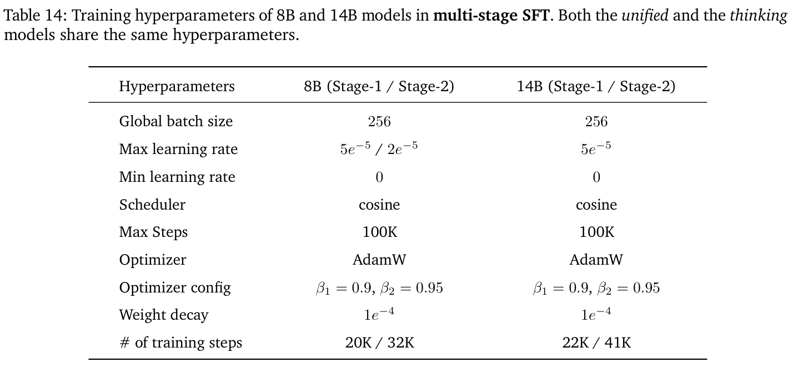
表 15 给出 8B 与 14B 模型的 RLHF 超参数。
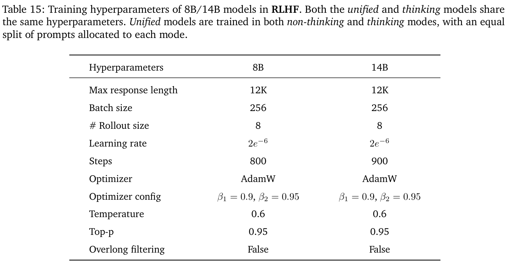
表 16 列出 8B 与 14B 模型在 IF-RL 训练中的超参数。
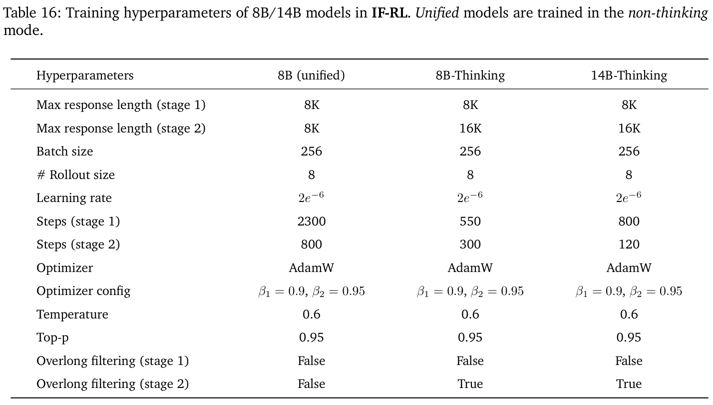
数学 RL 训练中使用的 8B 与 14B 模型超参数分别列在表 17 和表 18。
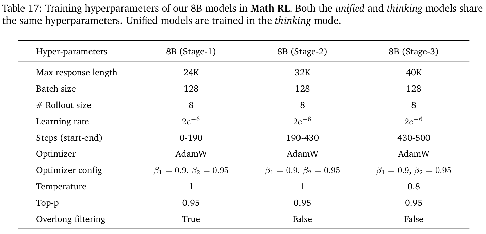
表 19 列出代码 RL 中 8B-Thinking、8B 统一和 14B-Thinking 模型的超参数。
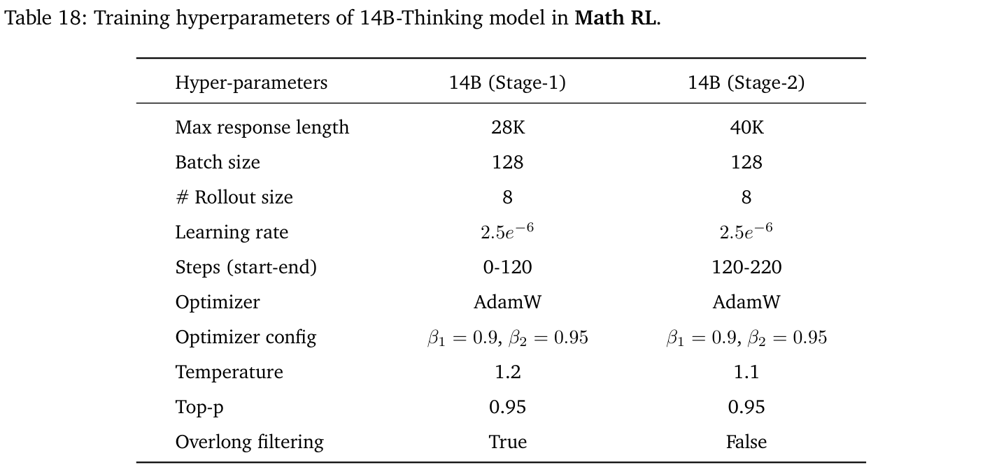
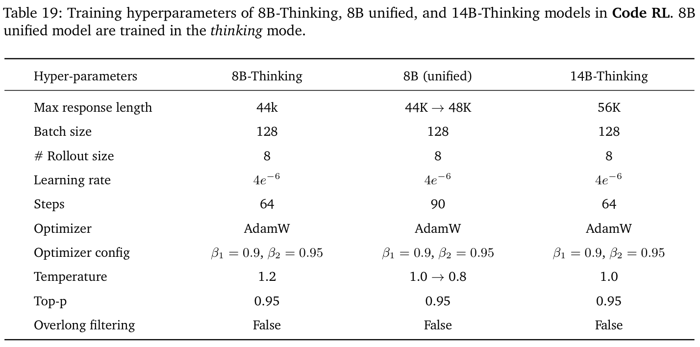
表 20 列出 SWE RL 训练中使用的 8B 统一、8B-Thinking 和 14B-Thinking 模型超参数。
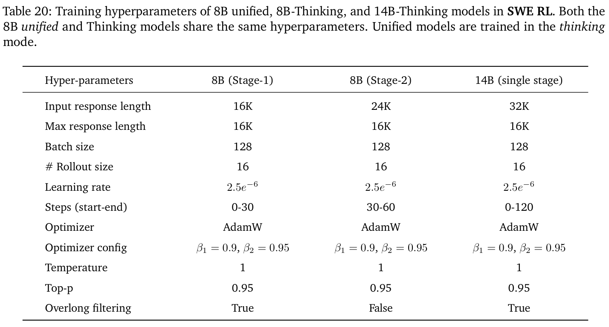
本节介绍 Nemotron-Cascade-8B 和 Nemotron-Cascade-14B-Thinking 模型所报告的 Codeforces Elo 评级细节，基于 2501–2507 之间举办的 51 场近期 Codeforces 比赛。问题和评估由 LiveCodeBench Pro（Zheng et al., 2025）提供。每场比赛中，我们通过允许模型对每个问题最多进行 \(N\) 次独立提交（\(N\) 默认设为 8）模拟参赛，采用 temperature 0.6、top-p 0.95 和最大 token 预算 128K 生成模型响应。令 \(k\) 表示 \(N\) 次尝试中的正确提交数，\(N - k\) 表示错误提交数（\(0 \le k \le N\)）。真实比赛中按顺序提交，惩罚提交次数定义为第一次正确提交之前的错误提交数。为估计提交惩罚，我们假设 \(k\) 次正确提交与 \(N - k\) 次错误提交的顺序，在 \(N\) 选 \(k\) 种排列中均匀分布，预期惩罚次数可推导为：
E[惩罚次数\(] = (N - k)/(k + 1)\)
我们采用标准 Codeforces 竞赛规则：对于常规 Codeforces 比赛，每次预期惩罚扣 50 分；对于 ICPC 风格比赛（例如教育赛、Div.3 比赛），则为每次错误增加 10 的时间惩罚。仍未解决的问题不考虑惩罚。依据最终分数，我们将模型竞赛表现与 \(n\) 个真实人类参赛者比较，排名为 \(m\)（\(1 \le m \le n + 1\)），并遵循标准 Elo 评级定义（Glickman and Jones, 1999; Quan et al., 2025），通过求解下式计算隐含表现评级 \(R_{model}\)：
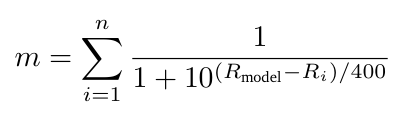
其中 \(R_{i}\) 指每场比赛之前人类参赛者 \(i\) 的 Elo 评级。我们报告平均表现
（接下一页）
（续上一页）
评级，即 51 场 Codeforces 比赛的平均值，作为最终 Elo 分数，并分别在表 21 和表 22 给出 Nemotron-Cascade-8B 与 Nemotron-Cascade-14B-Thinking 模型的性能细节。
我们观察到，模型在不同比赛中估计的表现评级具有较大方差。例如，Nemotron-Cascade-14B-Thinking 模型在 Codeforces Round 1015 上估计表现评级超过 2600，却在 Round 1024 Div.1 上未能解决任何问题（即使尝试 8 次），Elo 评级低于 1000。我们还发现，代码解题行为不一致：模型有时能够解决非常困难的问题，但也可能在相对简单的问题上卡住，即使在同一场比赛中也是如此。此外，模型倾向于在能够通过标准技术、大量实现工作或直接直觉解决的问题上表现良好，但经常难以处理需要在小规模数据上进行假设驱动探索或临时构思的问题，例如构造型或交互式问题。理解并提高这些推理能力可能成为有趣的未来方向。
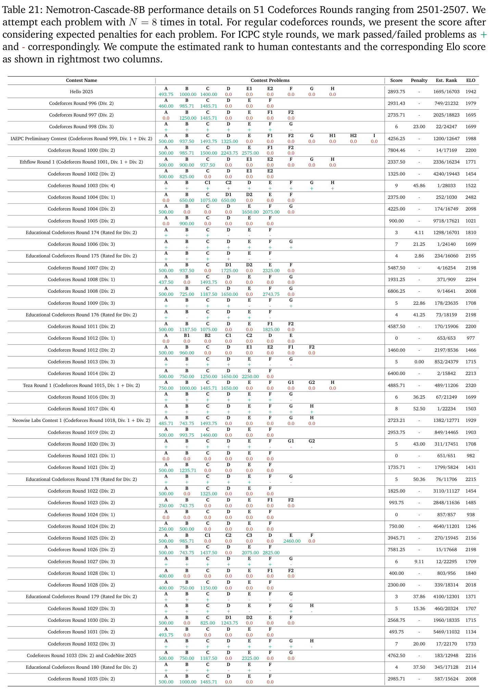
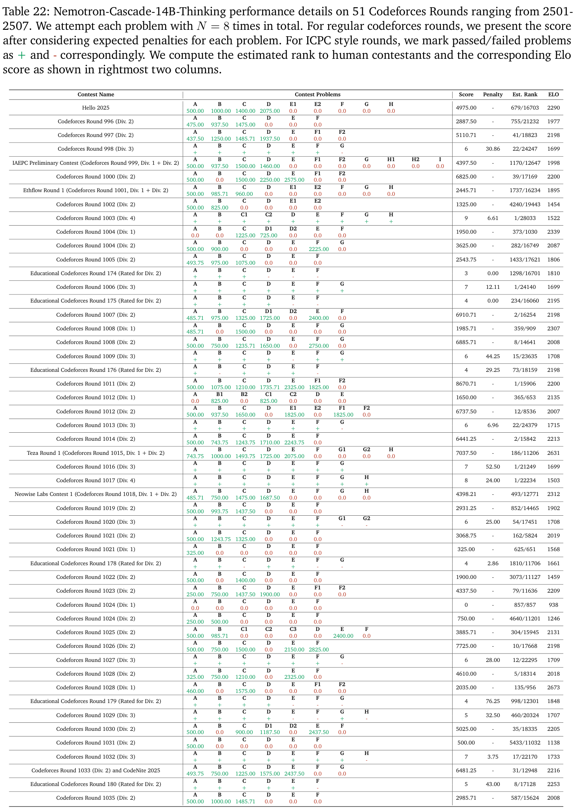
[1] Bo Adler, Niket Agarwal, Ashwath Aithal, Dong H Anh, Pallab Bhattacharya, Annika Brundyn, Jared Casper, Bryan Catanzaro, Sharon Clay, Jonathan Cohen, 等 Nemotron-4 340B 技术报告. arXiv 预印本 arXiv:2406.11704, 2024. 38
[2] Sandhini Agarwal, Lama Ahmad, Jason Ai, Sam Altman, Andy Applebaum, Edwin Arbus, Rahul K Arora, Yu Bai, Bowen Baker, Haiming Bao, 等 gpt-oss-120b 与 gpt-oss-20b 模型卡. arXiv 预印本 arXiv:2508.10925, 2025. 39
[3] Wasi Uddin Ahmad, Sean Narenthiran, Somshubra Majumdar, Aleksander Ficek, Siddhartha Jain, Jocelyn Huang, Vahid Noroozi, and Boris Ginsburg. OpenCodeReasoning：推进竞争性编程的数据蒸馏. arXiv 预印本 arXiv:2504.01943, 2025. 10, 28, 38
[4] Loubna Ben Allal, Anton Lozhkov, Elie Bakouch, Gabriel Martín Blázquez, Guilherme Penedo, Lewis Tunstall, Andrés Marafioti, Hynek Kydlíček, Agustín Piqueres Lajarín, Vaibhav Srivastav, 等 SmolLM2：当小模型走向大规模——以数据为中心的小语言模型训练. arXiv 预印本 arXiv:2502.02737, 2025. 9
[5] Sam Altman. 计划变更, 2025. 链接：https://x.com/sama/status/1908167621624856998. 5
[6] Anthropic. Claude Code, 2025. 11
[7] Ibragim Badertdinov, Alexander Golubev, Maksim Nekrashevich, Anton Shevtsov, Simon Karasik, Andrei Andriushchenko, Maria Trofimova, Daria Litvintseva, and Boris Yangel. SWE-reBench：用于软件工程 agent 任务收集与去污染评估的自动化流程. arXiv 预印本 arXiv:2505.20411, 2025. 12
[8] Yuntao Bai, Andy Jones, Kamal Ndousse, Amanda Askell, Anna Chen, Nova DasSarma, Dawn Drain, Stanislav Fort, Deep Ganguli, Tom Henighan, 等 通过 RLHF 训练有用且无害的助手. arXiv 预印本 arXiv:2204.05862, 2022. 38
[9] Elie Bakouch, Loubna Ben Allal, Anton Lozhkov, Nouamane Tazi, Lewis Tunstall, Carlos Miguel Patiño, Edward Beeching, Aymeric Roucher, Aksel Joonas Reedi, Quentin Gallouédec, Kashif Rasul, Nathan Habib, Clémentine Fourrier, Hynek Kydlicek, Guilherme Penedo, Hugo Larcher, Mathieu Morlon, Vaibhav Srivastav, Joshua Lochner, Xuan-Son Nguyen, Colin Raffel, Leandro von Werra, and Thomas Wolf. SmolLM3：小型、多语言、长上下文推理模型. https://huggingface.co/blog/smollm3, 2025. 8
[10] Akhiad Bercovich, Itay Levy, Izik Golan, Mohammad Dabbah, Ran El-Yaniv, Omri Puny, Ido Galil, Zach Moshe, Tomer Ronen, Najeeb Nabwani, 等 Llama-Nemotron：高效推理模型. arXiv 预印本 arXiv:2505.00949, 2025. 9, 10, 38, 39
[11] Ralph Allan Bradley and Milton E Terry. 不完全区组设计的秩分析：I. 成对比较方法. Biometrika, 39(3/4):324–345, 1952. 15
[12] Aili Chen, Aonian Li, Bangwei Gong, Binyang Jiang, Bo Fei, Bo Yang, Boji Shan, Changqing Yu, Chao Wang, Cheng Zhu, 等 MiniMax-M1：利用 Lightning Attention 高效扩展测试时计算. arXiv 预印本 arXiv:2506.13585, 2025. 39
[13] Yang Chen, Zhuolin Yang, Zihan Liu, Chankyu Lee, Peng Xu, Mohammad Shoeybi, Bryan Catanzaro, and Wei Ping. AceReason-Nemotron：通过强化学习推进数学与代码推理. Advances in Neural Information Processing Systems, 2025. 4, 14, 20, 21, 23, 24, 32, 33, 38
[14] Wei-Lin Chiang, Lianmin Zheng, Ying Sheng, Anastasios Nikolas Angelopoulos, Tianle Li, Dacheng Li, Hao Zhang, Banghua Zhu, Michael Jordan, Joseph E. Gonzalez, and Ion Stoica. Chatbot Arena：通过人类偏好评估 LLM 的开放平台, 2024. 31, 33
[15] Gordon V. Cormack, Charles L. A. Clarke, and Stefan Buettcher. 倒数排名融合优于 Condorcet 与单独的排名学习方法. 收录于 Proc. SIGIR, 第 758–759, 2009. 34
[16] Wenliang Dai, Nayeon Lee, Boxin Wang, Zhuolin Yang, Zihan Liu, Jon Barker, Tuomas Rintamaki, Mohammad Shoeybi, Bryan Catanzaro, and Wei Ping. NVLM：开放的前沿级多模态 LLM. arXiv 预印本 arXiv:2409.11402, 2024. 38
[17] DeepSeek-AI. DeepSeek-R1-0528, 2025. 链接：https://huggingface.co/deepseek-ai/DeepSeek-R1-0528. 9, 10, 12, 24, 26, 38
[18] DeepSeek-AI. DeepSeek-V3-0324, 2025. 链接：https://huggingface.co/deepseek-ai/DeepSeek-V3-0324. 9
[19] DeepSeek-AI. DeepSeek-V3.1, 2025. 链接：https://huggingface.co/deepseek-ai/DeepSeek-V3.1. 5, 39
[20] Abhimanyu Dubey, Abhinav Jauhri, Abhinav Pandey, Abhishek Kadian, Ahmad Al-Dahle, Aiesha Letman, Akhil Mathur, Alan Schelten, Amy Yang, Angela Fan, 等 Llama 3 模型家族. arXiv 电子预印本, 2024. 38
[21] Yichao Fu, Xuewei Wang, Yuandong Tian, and Jiawei Zhao. 带有置信度的深度思考. arXiv 预印本 arXiv:2508.15260, 2025. 29
[22] Bofei Gao, Feifan Song, Zhe Yang, Zefan Cai, Yibo Miao, Qingxiu Dong, Lei Li, Chenghao Ma, Liang Chen, Runxin Xu, 等 Omni-MATH：LLM 的通用奥林匹克级数学基准. arXiv 预印本 arXiv:2410.07985, 2024. 20
[23] Aryo Pradipta Gema, Joshua Ong Jun Leang, Giwon Hong, Alessio Devoto, Alberto Carlo Maria Mancino, Rohit Saxena, Xuanli He, Yu Zhao, Xiaotang Du, Mohammad Reza Ghasemi Madani, Claire Barale, Robert McHardy, Joshua Harris, Jean Kaddour, Emile van Krieken, and Pasquale Minervini. 我们已完成对 MMLU 的研究吗？, 2024. 9
[24] Mark E Glickman and Albyn C Jones. 评价国际象棋评级系统. CHANCE-BERLIN THEN NEW YORK-, 12:21–28, 1999. 49
[25] GLM-4.5-Team, Aohan Zeng, Xin Lv, Qinkai Zheng, Zhenyu Hou, Bin Chen, Chengxing Xie, Cunxiang Wang, Da Yin, Hao Zeng, Jiajie Zhang, 等 GLM-4.5：具备 agent、推理与编程（ARC）能力的基础模型. arXiv 预印本 arXiv:2508.06471, 2025. 39
[26] Daya Guo, Dejian Yang, Haowei Zhang, Junxiao Song, Ruoyu Zhang, Runxin Xu, Qihao Zhu, Shirong Ma, Peiyi Wang, Xiao Bi, 等 DeepSeek-R1：通过强化学习激励 LLM 的推理能力. arXiv 预印本 arXiv:2501.12948, 2025. 4, 5, 10, 38, 39
[27] Jujie He, Jiacai Liu, Chris Yuhao Liu, Rui Yan, Chaojie Wang, Peng Cheng, Xiaoyu Zhang, Fuxiang Zhang, Jiacheng Xu, Wei Shen, Siyuan Li, Liang Zeng, Tianwen Wei, Cheng Cheng, Bo An, Yang Liu, and Yahui Zhou. Skywork 开放推理模型系列, 2025. Notion 博客. 38
[28] Dan Hendrycks, Collin Burns, Steven Basart, Andy Zou, Mantas Mazeika, Dawn Song, and Jacob Steinhardt. 衡量大规模多任务语言理解. arXiv 预印本 arXiv:2009.03300, 2020. 6, 39
[29] Dan Hendrycks, Steven Basart, Saurav Kadavath, Mantas Mazeika, Akul Arora, Ethan Guo, Collin Burns, Samir Puranik, Horace He, Dawn Song, and Jacob Steinhardt. 通过 APPS 衡量编程挑战能力. NeurIPS, 2021. 23
[30] Dan Hendrycks, Collin Burns, Steven Basart, Andy Zou, Mantas Mazeika, Dawn Song, and Jacob Steinhardt. 衡量大规模多任务语言理解. Proceedings of the International Conference on Learning Representations (ICLR), 2021. 9
[31] Dan Hendrycks, Collin Burns, Saurav Kadavath, Akul Arora, Steven Basart, Eric Tang, Dawn Song, and Jacob Steinhardt. 通过 MATH 数据集衡量数学解题能力. arXiv 预印本 arXiv:2103.03874, 2021. 10, 20
[32] Siming Huang, Tianhao Cheng, Jason Klein Liu, Jiaran Hao, Liuyihan Song, Yang Xu, J Yang, Jiaheng Liu, Chenchen Zhang, Linzheng Chai, 等 OpenCoder：顶级代码 LLM 的开放配方. arXiv 预印本 arXiv:2411.04905, 2024. 10
[33] Naman Jain, King Han, Alex Gu, Wen-Ding Li, Fanjia Yan, Tianjun Zhang, Sida Wang, Armando Solar- Lezama, Koushik Sen, and Ion Stoica. LiveCodeBench：面向代码 LLM 的全面、无污染评估. arXiv 预印本 arXiv:2403.07974, 2024. 6, 28, 40
[34] Naman Jain, Jaskirat Singh, Manish Shetty, Liang Zheng, Koushik Sen, and Ion Stoica. R2E-Gym：用于扩展开放权重 SWE agent 的程序化环境与混合验证器, 2025. 链接：https://arxiv.org/abs/2504.07164. 26
[35] Carlos E Jimenez, John Yang, Alexander Wettig, Shunyu Yao, Kexin Pei, Ofir Press, and Karthik Narasimhan. SWE-bench：语言模型能否解决现实世界的 GitHub 问题？ arXiv 预印本 arXiv:2310.06770, 2023. 6, 11, 12, 25, 41
[36] Jared Kaplan, Sam McCandlish, Tom Henighan, Tom B Brown, Benjamin Chess, Rewon Child, Scott Gray, Alec Radford, Jeffrey Wu, and Dario Amodei. 神经语言模型的 scaling laws. arXiv 预印本 arXiv:2001.08361, 2020. 16
[37] Tushar Khot, Peter Clark, Michal Guerquin, Peter Jansen, and Ashish Sabharwal. QASC：通过句子组合进行问答的数据集. arXiv:1910.11473v2, 2020. 9
[38] Kimi-Team. Kimi-K2-Thinking, 2025. 链接：https://huggingface.co/moonshotai/Kimi-K2-Thinking. 4, 39
[39] Kimi-Team, Yifan Bai, Yiping Bao, Guanduo Chen, Jiahao Chen, Ningxin Chen, Ruijue Chen, Yanru Chen, Yuankun Chen, Yutian Chen, 等 Kimi K2：开放 agent 智能. arXiv 预印本 arXiv:2507.20534, 2025. 4, 27
[40] Kimi-Team, Angang Du, Bofei Gao, Bowei Xing, Changjiu Jiang, Cheng Chen, Cheng Li, Chenjun Xiao, Chenzhuang Du, Chonghua Liao, 等 Kimi K1.5：通过 LLM 扩展强化学习. arXiv 预印本 arXiv:2501.12599, 2025. 38
[41] Diederik P Kingma. Adam：一种随机优化方法. arXiv 预印本 arXiv:1412.6980, 2014. 18, 20, 23
[42] Nathan Lambert, Jacob Morrison, Valentina Pyatkin, Shengyi Huang, Hamish Ivison, Faeze Brahman, Lester James V. Miranda, Alisa Liu, Nouha Dziri, Shane Lyu, Yuling Gu, Saumya Malik, Victoria Graf, Jena D. Hwang, Jiangjiang Yang, Ronan Le Bras, Oyvind Tafjord, Chris Wilhelm, Luca Soldaini, Noah A. Smith, Yizhong Wang, Pradeep Dasigi, and Hannaneh Hajishirzi. Tülu 3：推进开放语言模型后训练的前沿. 2024. 9
[43] Nathan Lambert, Valentina Pyatkin, Jacob Morrison, LJ Miranda, Bill Yuchen Lin, Khyathi Chandu, Nouha Dziri, Sachin Kumar, Tom Zick, Yejin Choi, 等 RewardBench：评估语言建模 RM. arXiv 预印本 arXiv:2403.13787, 2024. 16, 17
[44] Nathan Lambert, Jacob Morrison, Valentina Pyatkin, Shengyi Huang, Hamish Ivison, Faeze Brahman, Lester James V. Miranda, Alisa Liu, Nouha Dziri, Shane Lyu, Yuling Gu, Saumya Malik, Victoria Graf, Jena D. Hwang, Jiangjiang Yang, Ronan Le Bras, Oyvind Tafjord, Chris Wilhelm, Luca Soldaini, Noah A. Smith, Yizhong Wang, Pradeep Dasigi, and Hannaneh Hajishirzi. Tulu 3：推进开放语言模型后训练的前沿, 2025. 链接：https://arxiv.org/abs/2411.15124. 18
[45] Jia Li, Edward Beeching, Lewis Tunstall, Ben Lipkin, Roman Soletskyi, Shengyi Huang, Kashif Rasul, Longhui Yu, Albert Q Jiang, Ziju Shen, 等 NuminaMath：ai4maths 中最大的公开数据集，包含 860K 对竞赛数学问题与解答. Hugging Face 仓库, 2024. 链接：https://huggingface.co/datasets/AI-MO/NuminaMath-CoT. 10, 20
[46] Rongao Li, Jie Fu, Bo-Wen Zhang, Tao Huang, Zhihong Sun, Chen Lyu, Guang Liu, Zhi Jin, and Ge Li. TACO：算法代码生成主题数据集. arXiv 预印本 arXiv:2312.14852, 2023. 10, 23
[47] Tianle Li, Wei-Lin Chiang, Evan Frick, Lisa Dunlap, Tianhao Wu, Banghua Zhu, Joseph E Gonzalez, and Ion Stoica. 从众包数据到高质量基准：Arena-Hard 与 BenchBuilder 流程. arXiv 预印本 arXiv:2406.11939, 2024. 6, 16, 19, 40
[48] Wing Lian, Guan Wang, Bleys Goodson, Eugene Pentland, Austin Cook, Chanvichet Vong, and "Teknium". SlimOrca：采用 GPT-4 扩充并经过验证的 FLAN 推理轨迹开放数据集, 2023. 链接：https://https://huggingface.co/Open-Orca/SlimOrca. 9
[49] Hunter Lightman, Vineet Kosaraju, Yuri Burda, Harrison Edwards, Bowen Baker, Teddy Lee, Jan Leike, John Schulman, Ilya Sutskever, and Karl Cobbe. 让我们逐步验证. 收录于 The Twelfth International Conference on Learning Representations, 2023. 38
[50] Aixin Liu, Bei Feng, Bing Xue, Bingxuan Wang, Bochao Wu, Chengda Lu, Chenggang Zhao, Chengqi Deng, Chenyu Zhang, Chong Ruan, 等 DeepSeek-V3 技术报告. arXiv 预印本 arXiv:2412.19437, 2024. 4
[51] Aixin Liu, Aoxue Mei, Bangcai Lin, Bing Xue, Bingxuan Wang, Bingzheng Xu, Bochao Wu, Bowei Zhang, Chaofan Lin, Chen Dong, 等 DeepSeek-V3.2：推进开放 LLM 的前沿. arXiv 预印本 arXiv:2512.02556, 2025. 30
[52] Chris Yuhao Liu, Liang Zeng, Jiacai Liu, Rui Yan, Jujie He, Chaojie Wang, Shuicheng Yan, Yang Liu, and Yahui Zhou. Skywork-Reward：LLM 奖励建模的技巧集. arXiv 预印本 arXiv:2410.18451, 2024. 38
[53] Zihan Liu, Yang Chen, Mohammad Shoeybi, Bryan Catanzaro, and Wei Ping. AceMath：通过后训练与奖励建模推进前沿数学推理. ACL, 2024. 10, 22
[54] Zihan Liu, Zhuolin Yang, Yang Chen, Chankyu Lee, Mohammad Shoeybi, Bryan Catanzaro, and Wei Ping. AceReason-Nemotron 1.1：通过 SFT 与 RL 协同推进数学和代码推理. arXiv 预印本 arXiv:2506.13284, 2025. 10, 22, 38, 39
[55] Shayne Longpre, Le Hou, Tu Vu, Albert Webson, Hyung Won Chung, Yi Tay, Denny Zhou, Quoc V Le, Barret Zoph, Jason Wei, 等 FLAN 集合：为有效指令微调设计数据与方法. arXiv 预印本 arXiv:2301.13688, 2023. 9
[56] Ilya Loshchilov and Frank Hutter. 解耦权重衰减正则化. arXiv 预印本 arXiv:1711.05101, 2017. 16
[57] Michael Luo, Naman Jain, Jaskirat Singh, Sijun Tan, Ameen Patel, Qingyang Wu, Alpay Ariyak, Colin Cai, Tarun Venkat, Shang Zhu, Ben Athiwaratkun, Manan Roongta, Ce Zhang, Li Erran Li, Raluca Ada Popa, Koushik Sen, and Ion Stoica. DeepSWE：通过扩展 RL 训练完全开源、最先进的编程 agent, 2025. 链接：https://www.together.ai/blog/deepswe. 7, 26, 27, 37
[58] Michael Luo, Sijun Tan, Roy Huang, Xiaoxiang Shi, Rachel Xin, Colin Cai, Ameen Patel, Alpay Ariyak, Qingyang Wu, Ce Zhang, Li Erran Li, Raluca Ada Popa, and Ion Stoica. DeepCoder：达到 o3-mini 水平的完全开源 14B 编程模型, 2025. Notion 博客. 23, 38
[59] Michael Luo, Sijun Tan, Justin Wong, Xiaoxiang Shi, William Y. Tang, Manan Roongta, Colin Cai, Jeffrey Luo, Li Erran Li, Raluca Ada Popa, and Ion Stoica. DeepScaleR：通过扩展 RL，用 1.5B 模型超越 O1-Preview, 2025. Notion 博客. 20, 38
[60] MAA. 美国数学邀请赛——AIME 2024, 2024. 40
[61] MAA. 美国数学邀请赛——AIME 2025, 2025. 40
[62] Yingqian Min, Zhipeng Chen, Jinhao Jiang, Jie Chen, Jia Deng, Yiwen Hu, Yiru Tang, Jiapeng Wang, Xiaoxue Cheng, Huatong Song, Wayne Xin Zhao, Zheng Liu, Zhongyuan Wang, and Ji-Rong Wen. 模仿、探索与自我改进：慢思考推理系统复现报告. arXiv 预印本 arXiv:2412.09413, 2024. 20
[63] mistralai. Ministral-3-14B-Reasoning-2512, 2025. 链接：https://huggingface.co/mistralai/Ministral-3-14B-Reasoning-2512. 27
[64] Ivan Moshkov, Darragh Hanley, Ivan Sorokin, Shubham Toshniwal, Christof Henkel, Benedikt Schifferer, Wei Du, and Igor Gitman. AIMO-2 获胜方案：使用 OpenMathReasoning 数据集构建最先进数学推理模型. arXiv 预印本 arXiv:2504.16891, 2025. 10, 38
[65] Niklas Muennighoff, Zitong Yang, Weijia Shi, Xiang Lisa Li, Li Fei-Fei, Hannaneh Hajishirzi, Luke Zettlemoyer, Percy Liang, Emmanuel Candès, and Tatsunori Hashimoto. s1：简单的 test-time scaling, 2025. 链接：https://arxiv.org/abs/2501.19393. 10
[66] Dhruv Nathawani, Igor Gitman, Somshubra Majumdar, Evelina Bakhturina, Ameya Sunil Mahabaleshwarkar, , Jian Zhang, and Jane Polak Scowcroft. Nemotron-Post-Training-Dataset-v1, 2025. 链接：https://huggingface.co/datasets/nvidia/Nemotron-Post-Training-Dataset-v1. 10, 11
[67] NVIDIA. Llama-Nemotron-Post-Training-Dataset, 2025 年 5 月. 链接：https://huggingface.co/datasets/nvidia/Llama-Nemotron-Post-Training-Dataset. 18
[68] NVIDIA. AceReason-Nemotron-7B, 2025. 链接：https://huggingface.co/nvidia/AceReason-Nemotron-7B. 24
[69] NVIDIA. NVIDIA Nemotron Nano 2：准确、高效的 Mamba-Transformer 混合推理模型. arXiv 预印本 arXiv:2508.14444, 2025. 38, 40
[70] OpenAI. ChatML 格式. 链接：https://github.com/openai/openai-python/blob/release-v0.28.0/chatml.md. 8
[71] OpenAI. 学习使用 LLM 进行推理, 2024. 4, 39
[72] OpenAI. 介绍 SWE-bench Verified, 2024. 6, 41
[73] OpenAI. 介绍 GPT-4.5, 2025. 4
[74] OpenAI. 介绍 GPT-5, 2025. 5, 39
[75] OpenAI. 介绍 OpenAI o3 与 o4-mini, 2025. 4, 39
[76] Long Ouyang, Jeffrey Wu, Xu Jiang, Diogo Almeida, Carroll Wainwright, Pamela Mishkin, Chong Zhang, Sandhini Agarwal, Katarina Slama, Alex Ray, 等 使用人类反馈训练语言模型遵循指令. NeurIPS, 35, 2022. 4, 38
[77] Junsoo Park, Seungyeon Jwa, Meiying Ren, Daeyoung Kim, and Sanghyuk Choi. OffsetBias：利用去偏数据微调评估器, 2024. 15
[78] Shishir G. Patil, Huanzhi Mao, Charlie Cheng-Jie Ji, Fanjia Yan, Vishnu Suresh, Ion Stoica, and Joseph E. Gonzalez. Berkeley Function Calling Leaderboard（BFCL）：从工具使用到 LLM 的 agent 评估. 收录于 ICML, 2025. 6
[79] Bowen Peng, Jeffrey Quesnelle, Honglu Fan, and Enrico Shippole. YaRN：LLM 的高效上下文窗口扩展. arXiv 预印本 arXiv:2309.00071, 2023. 40
[80] Valentina Pyatkin, Saumya Malik, Victoria Graf, Hamish Ivison, Shengyi Huang, Pradeep Dasigi, Nathan Lambert, and Hannaneh Hajishirzi. 泛化可验证的指令遵循, 2025. 链接：https://huggingface.co/datasets/allenai/IF_multi_constraints_upto5. 6, 18, 40
[81] Shanghaoran Quan, Jiaxi Yang, Bowen Yu, Bo Zheng, Dayiheng Liu, An Yang, Xuancheng Ren, Bofei Gao, Yibo Miao, Yunlong Feng, 等 CodeElo：通过可与人类比较的 Elo 评级评估 LLM 竞赛级代码生成. arXiv 预印本 arXiv:2501.01257, 2025. 49
[82] Qwen-Team. Qwen3-235B-A22B-Thinking-2507 , 2025. 链接：https://huggingface.co/Qwen/Qwen3-235B-A22B-Thinking-2507. 5, 39
[83] Rafael Rafailov, Archit Sharma, Eric Mitchell, Christopher D Manning, Stefano Ermon, and Chelsea Finn. DPO：你的语言模型其实是 RM. Advances in Neural Information Processing Systems, 2023. 38
[84] David Rein, Betty Li Hou, Asa Cooper Stickland, Jackson Petty, Richard Yuanzhe Pang, Julien Dirani, Julian Michael, and Samuel R Bowman. GPQA：研究生级、无法通过 Google 搜索解答的问答基准. 收录于 First Conference on Language Modeling, 2024. 6, 39
[85] John Schulman, Filip Wolski, Prafulla Dhariwal, Alec Radford, and Oleg Klimov. PPO 算法. arXiv 预印本 arXiv:1707.06347, 2017. 38
[86] Zhihong Shao, Peiyi Wang, Qihao Zhu, Runxin Xu, Junxiao Song, Xiao Bi, Haowei Zhang, Mingchuan Zhang, YK Li, Y Wu, 等 DeepSeekMath：推动开放语言模型数学推理的极限. arXiv 预印本 arXiv:2402.03300, 2024. 14, 38
[87] Guangming Sheng, Chi Zhang, Zilingfeng Ye, Xibin Wu, Wang Zhang, Ru Zhang, Yanghua Peng, Haibin Lin, and Chuan Wu. HybridFlow：灵活、高效的 RLHF 框架. arXiv 预印本 arXiv: 2409.19256, 2024. 24
[88] Guangming Sheng, Chi Zhang, Zilingfeng Ye, Xibin Wu, Wang Zhang, Ru Zhang, Yanghua Peng, Haibin Lin, and Chuan Wu. HybridFlow：灵活、高效的 RLHF 框架. 收录于 Proceedings of the Twentieth European Conference on Computer Systems, 第 1279–1297, 2025. 14
[89] Atefeh Sohrabizadeh, Jialin Song, Mingjie Liu, Rajarshi Roy, Chankyu Lee, Jonathan Raiman, and Bryan Catanzaro. Nemotron-Cortexa：通过改进定位与解决方案多样性，增强软件工程任务的 LLM agent. 收录于 Forty-second International Conference on Machine Learning, 2025. 34
[90] Zhenpeng Su, Leiyu Pan, Xue Bai, Dening Liu, Guanting Dong, Jiaming Huang, Wenping Hu, Fuzheng Zhang, Kun Gai, and Guorui Zhou. Klear-Reasoner：通过保持 gradient 的裁剪策略优化推进推理能力. arXiv 预印本 arXiv:2508.07629, 2025. 38
[91] Binghai Wang, Runji Lin, Keming Lu, Le Yu, Zhenru Zhang, Fei Huang, Chujie Zheng, Kai Dang, Yang Fan, Xingzhang Ren, 等 WorldPM：扩展人类偏好建模. arXiv 预印本 arXiv:2505.10527, 2025. 16
[92] Peiyi Wang, Lei Li, Zhihong Shao, RX Xu, Damai Dai, Yifei Li, Deli Chen, Yu Wu, and Zhifang Sui. Math-Shepherd：无需人工标注，逐步验证并强化 LLM. arXiv 预印本 arXiv:2312.08935, 2023. 38
[93] Xuezhi Wang, Jason Wei, Dale Schuurmans, Quoc V Le, Ed H. Chi, Sharan Narang, Aakanksha Chowdhery, and Denny Zhou. 自一致性改进语言模型的 CoT 推理. 收录于 The Eleventh International Conference on Learning Representations, 2023. 链接：https://openreview.net/forum?id=1PL1NIMMrw. 34
[94] Yubo Wang, Xueguang Ma, Ge Zhang, Yuansheng Ni, Abhranil Chandra, Shiguang Guo, Weiming Ren, Aaran Arulraj, Xuan He, Ziyan Jiang, 等 MMLU-Pro：更稳健、更具挑战的多任务语言理解基准. arXiv 预印本 arXiv:2406.01574, 2024. 6, 9, 39
[95] Zhilin Wang, Yi Dong, Olivier Delalleau, Jiaqi Zeng, Gerald Shen, Daniel Egert, Jimmy J. Zhang, Makesh Narsimhan Sreedhar, and Oleksii Kuchaiev. HelpSteer2：用于训练高性能 RM 的开源数据集, 2024. 15, 38
[96] Zhilin Wang, Jiaqi Zeng, Olivier Delalleau, Ellie Evans, Daniel Egert, Hoo-Chang Shin, Felipe Soares, Yi Dong, and Oleksii Kuchaiev. RLBFF：连接人类反馈与可验证奖励的二元灵活反馈. arXiv 预印本 arXiv:2509.21319, 2025. 18
[97] Zhilin Wang, Jiaqi Zeng, Olivier Delalleau, Hoo-Chang Shin, Felipe Soares, Alexander Bukharin, Ellie Evans, Yi Dong, and Oleksii Kuchaiev. HelpSteer3-Preference：跨多样任务与语言的开放人工标注偏好数据, 2025. 链接：https://arxiv.org/abs/2505.11475. 15
[98] Yuxiang Wei, Olivier Duchenne, Jade Copet, Quentin Carbonneaux, Lingming Zhang, Daniel Fried, Gabriel Synnaeve, Rishabh Singh, and Sida I Wang. SWE-RL：通过开放软件演化上的强化学习推进 LLM 推理. arXiv 预印本 arXiv:2502.18449, 2025. 11, 13, 27, 35
[99] Ronald J Williams. 联结主义强化学习的简单统计 gradient 跟随算法. Machine learning, 8:229–256, 1992. 15
[100] Chunqiu Steven Xia, Yinlin Deng, Soren Dunn, and Lingming Zhang. Agentless：揭示基于 LLM 的软件工程 agent. arXiv 预印本 arXiv:2407.01489, 2024. 11
[101] LLM Xiaomi, Bingquan Xia, Bowen Shen, Dawei Zhu, Di Zhang, Gang Wang, Hailin Zhang, Huaqiu Liu, Jiebao Xiao, Jinhao Dong, 等 MiMo：释放语言模型的推理潜力——从预训练到后训练. arXiv 预印本 arXiv:2505.07608, 2025. 23
[102] Chengxing Xie, Bowen Li, Chang Gao, He Du, Wai Lam, Difan Zou, and Kai Chen. SWE-Fixer：训练开源 LLM，以有效、高效地解决 GitHub 问题. arXiv 预印本 arXiv:2501.05040, 2025. 12
[103] Zhangchen Xu, Fengqing Jiang, Luyao Niu, Yuntian Deng, Radha Poovendran, Yejin Choi, and Bill Yuchen Lin. Magpie：用空提示引导对齐 LLM，从零合成对齐数据. ArXiv, abs/2406.08464, 2024. 链接：https://api.semanticscholar.org/CorpusID:270391432. 9
[104] An Yang, Baosong Yang, Beichen Zhang, Binyuan Hui, Bo Zheng, Bowen Yu, Chengyuan Li, Dayiheng Liu, Fei Huang, Haoran Wei, 等 Qwen2.5 技术报告. arXiv 预印本 arXiv:2412.15115, 2024. 9, 16
[105] An Yang, Beichen Zhang, Binyuan Hui, Bofei Gao, Bowen Yu, Chengpeng Li, Dayiheng Liu, Jianhong Tu, Jingren Zhou, Junyang Lin, 等 Qwen2.5-Math 技术报告：通过自我改进迈向数学专家模型. arXiv 预印本 arXiv:2409.12122, 2024. 38
[106] An Yang, Anfeng Li, Baosong Yang, Beichen Zhang, Binyuan Hui, Bo Zheng, Bowen Yu, Chang Gao, Chengen Huang, Chenxu Lv, 等 Qwen3 技术报告. arXiv 预印本 arXiv:2505.09388, 2025. 5, 8, 9, 11, 16, 38, 39
[107] John Yang, Kilian Lieret, Carlos E Jimenez, Alexander Wettig, Kabir Khandpur, Yanzhe Zhang, Binyuan Hui, Ofir Press, Ludwig Schmidt, and Diyi Yang. SWE-Smith：扩展软件工程 agent 的数据. arXiv 预印本 arXiv:2504.21798, 2025. 12, 27
[108] Edward Yeo, Yuxuan Tong, Morry Niu, Graham Neubig, and Xiang Yue. 揭示 LLM 中的长 CoT 推理. arXiv 预印本 arXiv:2502.03373, 2025. 39
[109] Qiying Yu, Zheng Zhang, Ruofei Zhu, Yufeng Yuan, Xiaochen Zuo, Yu Yue, Weinan Dai, Tiantian Fan, Gaohong Liu, Lingjun Liu, 等 DAPO：大规模开源 LLM 强化学习系统. arXiv 预印本 arXiv:2503.14476, 2025. 15, 19, 23, 38
[110] Lifan Yuan, Ganqu Cui, Hanbin Wang, Ning Ding, Xingyao Wang, Jia Deng, Boji Shan, Huimin Chen, Ruobing Xie, Yankai Lin, Zhenghao Liu, Bowen Zhou, Hao Peng, Zhiyuan Liu, and Maosong Sun. 通过偏好树推进通用 LLM 推理模型, 2024. 9
[111] Zhenru Zhang, Chujie Zheng, Yangzhen Wu, Beichen Zhang, Runji Lin, Bowen Yu, Dayiheng Liu, Jingren Zhou, and Junyang Lin. 开发数学推理 PRM 的经验教训. arXiv 预印本 arXiv:2501.07301, 2025. 38
[112] Lianmin Zheng, Wei-Lin Chiang, Ying Sheng, Tianle Li, Siyuan Zhuang, Zhanghao Wu, Yonghao Zhuang, Zhuohan Li, Zi Lin, Eric. P Xing, Joseph E. Gonzalez, Ion Stoica, and Hao Zhang. LMSYS-Chat-1M：大规模真实世界 LLM 对话数据集, 2023. 18
[113] Zihan Zheng, Zerui Cheng, Zeyu Shen, Shang Zhou, Kaiyuan Liu, Hansen He, Dongruixuan Li, Stanley Wei, Hangyi Hao, Jianzhu Yao, 等 LiveCodeBench Pro：奥林匹克奖牌获得者如何评判竞争性编程中的 LLM？ arXiv 预印本 arXiv:2506.11928, 2025. 6, 28, 40, 49
[114] Jeffrey Zhou, Tianjian Lu, Swaroop Mishra, Siddhartha Brahma, Sujoy Basu, Yi Luan, Denny Zhou, and Le Hou. LLM 的指令遵循评估, 2023. 链接：https://arxiv.org/abs/2311.07911. 6, 18, 40